| 嫌われたかも!?と心配にならない話し方のルール | |
| 植西聰 | |
| (2014) | |
嫌われたかも!?
と心配にならない話し方のルール
植西 聰
本作品の全部または一部を無断で複製、転載、配信、送信したり、ホームページ上に転載することを禁止します。また、本作品の内容を無断で改変、改ざん等を行うことも禁止します。
本作品購入時にご承諾いただいた規約により、有償・無償にかかわらず本作品を第三者に譲渡することはできません。
本作品を示すサムネイルなどのイメージ画像は、再ダウンロード時に予告なく変更される場合があります。
本作品は縦書きでレイアウトされています。
また、ご覧になるリーディングシステムにより、表示の差が認められることがあります。
はじめに
「あの人に嫌われたくない」
「誰とでもうまくやっていきたい」
「職場の仲間とも友達ともいつまでも良好な関係でありたい」
という思いは、多くの人に共通する願いです。
世の中を見渡すと、それを可能にしている人もいれば、そうでない人もいます。
この差はいったいどこからくるのでしょう。
私はこのことについて長年研究した末、「嫌われることなく上手に人間関係を築ける人」「多くの人から親しまれ好かれる人」の話し方には一つの共通点があることを突きとめました。
それは会話の際、相手の心をポジティブにする術に長けているということです。
その前提条件として、相手の心がマイナスになるような言葉を口にしません。
初対面のとき、「この人は感じのいい人」という印象を与えます。
そして、つきあいが深まるにつれて、安心感と信頼感を与えます。
相手の心がポカポカと温まるような言葉を会話に取り入れていきます。
自分を出すことなく、相手を立てようとします。
他人に尽くしたり、助けることを第一に考え、それを言葉に表します。
会話を通して、お互い助けあう「ギブ＆テイク」の関係を築きます。
そういったことを体系化して、「嫌われたかもしれない」と心配することなく良好な関係を築くためのテクニックを会話に取り入れてもらおうと書き著わしたのが本書なのです。
本書を一読すれば、自分の日常会話のどこに問題があるかが、瞬時に把握できるようになります。
どうすれば、他人が親しみや好感を寄せてくれるのか、そのポイントも明確になります。
そして、それを即、会話に生かすことで、その効果が実感できるでしょう。
この本は、
「人気がなく影がうすい」
「嫌われてしまうことがある」
「対人運が悪い」
「職場の人間関係で悩んでいる」
「人望がない」
「友達が少ない」
「恋人がなかなかできない」
という人にとっては、格好のバイブルになることをお約束します。
植西 聰
01 悩みの多くは「人づきあい」が関係している
厚生労働省が５年ごとに発表している「労働者健康状況調査」によると、仕事に関して強いストレスを感じている人は年々増加の傾向にあります。
その人たちの多くは、「職場の人間関係の問題」を一番に挙げているのです。
平成19年の調査によると、その問題が４割近くだったのが、平成24年の調査だと、４割を超えているのです。
そして、この傾向は男女ともに共通していると言います。
その通りといっていいでしょう。
仕事がそんなにおもしろくなくても、人間関係がうまくいっていれば、さほどストレスはたまりません。
逆に、仕事自体がおもしろくても、他人に嫌われてしまい、人間関係がうまくいかなくなると、孤独感に陥るだろうし、ストレスもたまります。
プライベートも同じです。人間関係がうまくいかないという人は、一緒に遊んでくれたり、相談に乗ってくれる友達がいなくなります。
そうすると、孤独感にも陥るでしょうし、余暇も楽しめなくなりストレスはたまる一方です。
もし、自分がそうだとしたら、他人に対する日頃の言動を振り返ってみましょう。
「他人を不快な気分にしたか」「他人を傷つけたか」などなど。
そういったことを起点に考えることが、嫌われることなく人と良好な関係を築く会話の基本となります。
ＰＯＩＮＴ 他人に対する日頃の言動を振り返ってみる
02 嫌われない人は、会話の最低限のルールを厳守している
コンプライアンスという言葉があります。
コンプライアンスとは、正確にいうと法令を守るという意味です。最近では企業なども「企業倫理を守る」という意味で使うようになりました。
「粉飾決算を行わない」
「架空請求をしない」
「商品の偽装を行わない」
など、会社の信用やブランドイメージを守るためのルールがこれに当たります。
これは、企業だけでなく、個人においてもマナーという形で要求されます。
「葬式に行く時は黒い服でいく」
「ホテルに行くときは、サンダルを履かない」
「禁煙場所ではタバコを吸わない」
などがその典型といっていいでしょう。
こうしたことを守らないと、他人からひんしゅくを買うことになります。
人との会話においてもまったく同じことが言えます。
多くの人に好かれている人は、話術に長けているというわけではありません。「会話のコンプライアンス」、すなわち口にしてはいけない最低限のルールを無意識のうちに心得ているのです。
言い換えると、相手が不快な気持ちになる言葉をつつしんでいるのです。
まず、相手に不快感を与えないように、会話のコンプライアンスが大切です。
ＰＯＩＮＴ 相手が不快な気持ちになる言葉をつつしむ
03 嫌われない人は、マイナスの言葉を口にしない
来週、海外旅行に行く人がいるとします。
その人に「来週は台風がくるみたいだよ。飛行機が欠航にならないといいね」と言ったらどうなるでしょう。
相手は不快な気分になります。
心配事を増やすことになるでしょう。
しかも、一度だけならまだしも、何度も口に出したら、相手はどんな反応を示すでしょう。「いい加減にしてくれ」という気持ちになり、その人のことを敬遠したくなると思います。
親しみを持てる人は違います。
来週、海外旅行に行く人が「台風の影響で飛行機が欠航になったらどうしよう」と言ってきたら、次のように返答します。
「大丈夫。台風が来ても余程のことがない限り、国際線は飛ぶから心配ないわよ」
「それよりも、海外旅行に行くなら、存分に楽しんできたら？」
こういう言葉を耳にしたら、飛行機の欠航を心配していた人の心は瞬時に晴れ、明るく楽しい気分になり、そう言ってくれた人に好感を持つようになります。
結論を言えば、マイナスの言葉をつつしみ、希望をもたせるプラスの言葉を多くすることで、まわりの人の気持ちは明るくなるのです。
明るい気持ちにさせてくれる人のもとには、たくさんの人が集まるようになります。
ＰＯＩＮＴ プラスの言葉は人を明るい気持ちにさせる
04 嫌われない人は、他人の悪口を言わない
「因果応報」という言葉があります。何事も原因があるから結果が現われるという意味です。普段の生活にあてはめると「因果応報」の「因」とは、人が常日頃考えていることや、他人に口にしていること。「果」とは、現実に起きたことになります。
つまり、過去の善悪の言動が原因となり、その報いとして現在に善悪の結果がもたらされることを意味します。
嫌われてしまうような人は他人と会話するうえで、マイナスの「因」を作り出している面がたぶんにあります。その典型が陰口です。「あの人は不倫をしているみたいよ」「あの人って本当にケチね」。このような陰口を周囲の人に言い続けていたら、それを聞かされた側は、そのときは同調しても次第にこう考えるようになります。
「あの人は陰口が多い。私も陰で何をいわれているかわからない」
やがて相手は警戒心を抱き、心を閉ざし、その人を敬遠するようになります。これが、「因果応報」でいうマイナスの「果」です。
このマイナスの「果」を、人に好感を与えるプラスの「果」に転じていくためには、相手の警戒心を解く、すなわち、会話する際には陰口をつつしむのが一番なのです。
ＰＯＩＮＴ 悪口はマイナスの「果」を招く
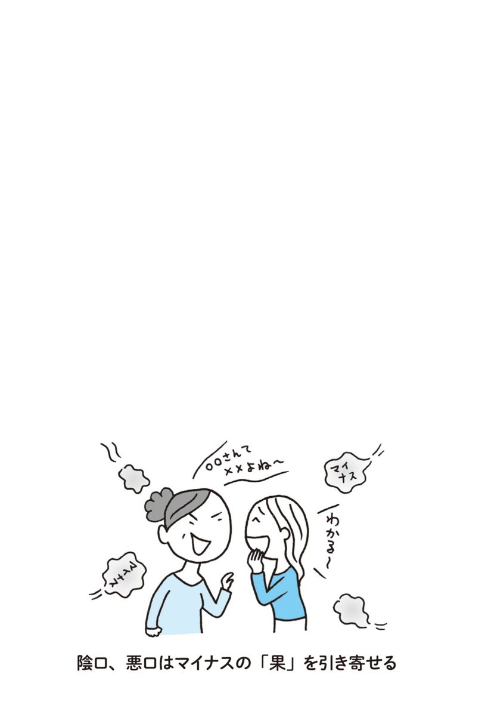
05 嫌われない人は、グチをこぼさない
私たちは大なり小なり何かしらの欲求を抱いています。
「もっと、たくさん給料がほしい」
「大好きな人とデートしたい」
などなど。そうした欲求が満たされると心はプラスになります。
しかし、満たされないと、心はマイナスになります。
そして、マイナスの心を野放しにしていると、それがグチという形で言葉になって表れます。
こうしたグチをたまにこぼす程度なら、相手も多少同情してくれるでしょう。
しかし、ひんぱんに聞かされたら、相手も憂うつで不快な気分になります。
「欲求が満たされないのは、私も同じ。私にだって恋人にふられたというフラストレーションがある。それなのにこの人ったら、自分の不平不満しか口にしない身勝手な人」というレッテルを、グチを言う人々に貼るようになります。
その点、嫌われることなく良好な関係を築く人は無意識にこう考えます。
「不平不満があるのはみんな同じ。だから、自分だけ不平不満を口にしても意味がない」
言い換えると、人間は誰にでもグチをこぼしたくなる要素があるのです。
満たされない欲求があるのです。
大切なのはそのことを客観視し、「みんな同じ」と割り切って考えることなのです。そうすれば、グチをこぼす頻度は大幅に減っていくでしょう。
ＰＯＩＮＴ 「不平不満があるのはみんな同じ」と考える
06 嫌われない人は、人を見下さない
江戸時代後期に良寛という曹洞宗の僧侶がいました。良寛は今も昔も多くの人に愛され親しまれています。それは、知識人で歌人・書道家としての才がありながら、人をバカにしたり、見下さないことが関係しています。
誰かがくだらない話をしてきても、「おもしろいですね」と返答します。
知っている話をしてきたときも、「なるほど」と相づちを打ちます。
ところが、人を不快な気持ちにさせてしまう人の言葉をつぶさに観察すると、良寛とは真逆のような感じがしてなりません。
誰かがくだらない話をしてきたら、「レベルが低いね」と返答します。
知っている話をしてきたら、「そんなの常識です」「誰でも知っています」と切り返します。
そういう言葉を口にする本人は無意識なのかもしれませんが、言われたほうはバカにされたような、軽蔑されたような気分になります。
そのため、相手に対し怒りをおぼえたり、敵意を抱くようになります。
したがって、会話をしていくなかで、「こういう言い方をしたら、相手を見下し、バカにすることにはならないか」といったことに注意を払うことが大切になってくるのです。
ＰＯＩＮＴ 相手を見下すことにならないか注意する
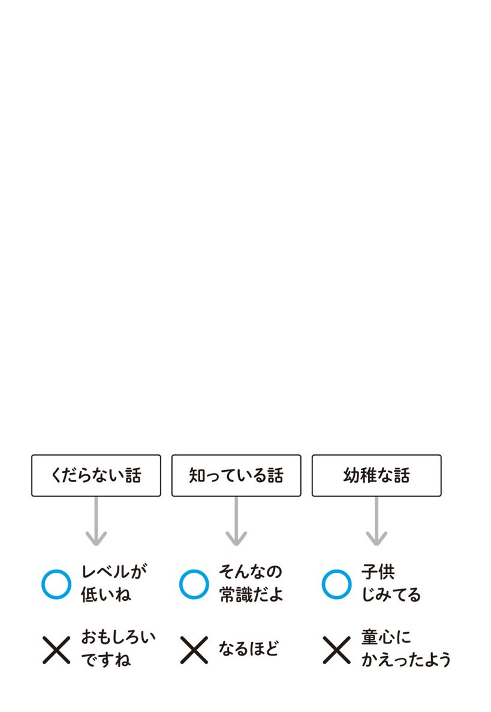
07 嫌われない人は、言っていいことと悪いことの分別をつける
絵を描くのが苦手な人に向かって、直接、「あなたは絵が下手ですね」と言ったりしません。
歌を歌うのが苦手な人に向かって、直接、「あなたは音痴ですね」とも言いません。
これは良好な人間関係を築くうえで最低限のルールですが、なかにはこうしたことが守れない人もいます。
食品メーカーに勤務する女性がいました。
彼女は、あるスーパーに新商品を陳列してもらおうと、上司が作成した新商品の販売促進提案書を、そこのスーパーの店長に提出したことがありました。
しかし、店長からは却下されてしまいました。そのことを上司に報告すると、「押しが足らないからだ」と叱られ、ついカッとなり、こう言ってしまったのです。
「スーパーの店長が却下したのは、部長が作成した文章がひどいからです」
以来、彼女は上司から嫌われ、無視されるようになったのです。
これに対し、良好な関係を保てる人は、感情任せで自分の本音をそのまま口に出すことはありません。露骨な本音を口にしてしまうと、相手のプライドを傷つけてしまうことになります。しかも、「これがこの人の本音なのだ」と思わせてしまうため、相手との間に大きな溝が生じるようになります。
親しまれ好かれる人はそういったことに、人一倍、気を配っているのです。
言い換えると、言っていいことと悪いことの分別をつけることも、「会話のマナー」の一つなのです。
ＰＯＩＮＴ 感情任せで自分の本音をそのまま口にしない
08 嫌われない人は、相手が気にしていることを口にしない
東南アジアに古くから伝わる民話を紹介しましょう。
ある沼地に一匹のヘビが住んでいました。一匹のカエルがヘビに向かって、「あなたは泳ぐのが上手ですね」と言いました。すると、ヘビは嬉しそうに微笑みました。
次に、そのヘビに向かって、二匹目のカエルが「あなたは木に登るのも上手ですね」と言いました。すると、ヘビはまたもや嬉しそうに微笑みました。
最後に、三匹目のカエルがそのヘビに向かって、「泳ぐのも、木に登るのも上手だから、手足がなくても不自由はしないでしょう」と言いました。すると、ヘビは途端に怒り出し、三匹目のカエルを飲み込んでしまいました。ヘビは手足がないことに劣等感を持っていたのです。
人に好かれる人は、一匹目、二匹目のカエルのように、相手の長所しか口にしません。
しかし、人に嫌われてしまう人は、三匹目のカエルのように、相手が引け目に感じていることことを口にするところがあります。
自分自身に置き換えてみるとわかりやすいと思いますが、引け目に感じていることを突かれると、それだけで心が大きく傷つくものです。
気にしていることには触れない気配りも「会話のマナー」を守ることにつながります。
ＰＯＩＮＴ 自分がされてイヤなことは相手にもしない
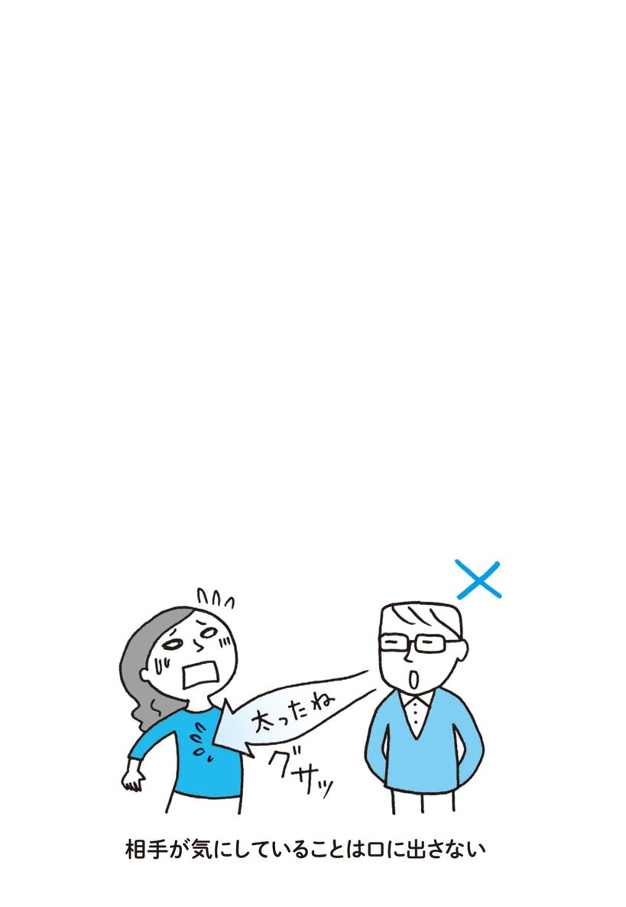
09 嫌われない人は、自慢話をしない
Ａ子さんとＢ子さんという独学で英語をマスターし、ペラペラしゃべれるようになった二人の女性がいました。
その二人がある勉強会に講演者として招かれ、英会話の習得の方法を話すことになりました。まず、ある年の春にＡ子さんが講演し、秋にＢ子さんが講演しました。
やがて、翌年以降になると、Ａ子さんだけが、たびたび、その勉強会に講演者として招かれるようになりました。
なぜでしょうか。それは二人の会話の内容に少なからず関係していました。
Ａ子さんは今だから笑って語れる自分自身の失敗談を中心にしゃべりました。
これに対し、Ｂ子さんは自慢話のオンパレードだったのです。
これが講演ではなく一般の会話だとしたら、なおさらのこと、自慢話をする人は敬遠されるようになります。
人には大なり小なり、「人から認められたい」「人から評価されたい」「他人よりも優位に立ちたい」という欲求があります。
ところが、他人から自慢話を聞かされると、自分自身の欲求が損なわれてしまいます。人によっては劣等感を感じることもあり、あまり楽しい気分ではありません。
その点、嫌われることなく良好な関係を保つ人は、そのへんをわきまえ、自慢話をつつしみます。「自分はこんなに優れている」ということを、おくびにも出しません。
むしろ、聞いている相手を優位に立たせようとします。
結論を言えば、自慢話と好感度は〝反比例の関係〟にあるのです。
ＰＯＩＮＴ 自慢話と好感度は〝反比例の関係〟にある
10 嫌われない人は、感情的にモノを言わない
歴史が苦手な人でも、織田信長・豊臣秀吉・徳川家康は知っていると思います。以前、この三人を引き合いに出して、20代男女に、「三人が現代によみがえって会社を経営したら、誰が一番成功すると思うか」という大手新聞社の調査がありました。
すると、半数近くの人が「織田信長」と答えました。
次に「三人のうち、上司として好ましいのは誰か」という調査を行いました。
すると、「織田信長」と答えた人は２割もいませんでした。経営者としては評価されているのに、なぜ上司としては評価されないのでしょう。多くの若者は「短気そうだし、すぐに感情的になってモノを言いそうだから」という理由を挙げています。
人間には、感情的に話をする相手を、無意識に「敵」とみなしてしまう本能が備わっています。そのため、そういう人をついつい敬遠したくなるのです。
逆に、多くの人が周りに集まるような人はその点をわきまえています。
どんなにイライラしていても、腹の立つようなことがあっても、感情でモノを言いません。
そういうときは、いったん冷静になり、ひと呼吸おいて、心が落ち着いてから、人と会話するように心がけています。
ＰＯＩＮＴ イライラしたらいったん心を落ち着ける
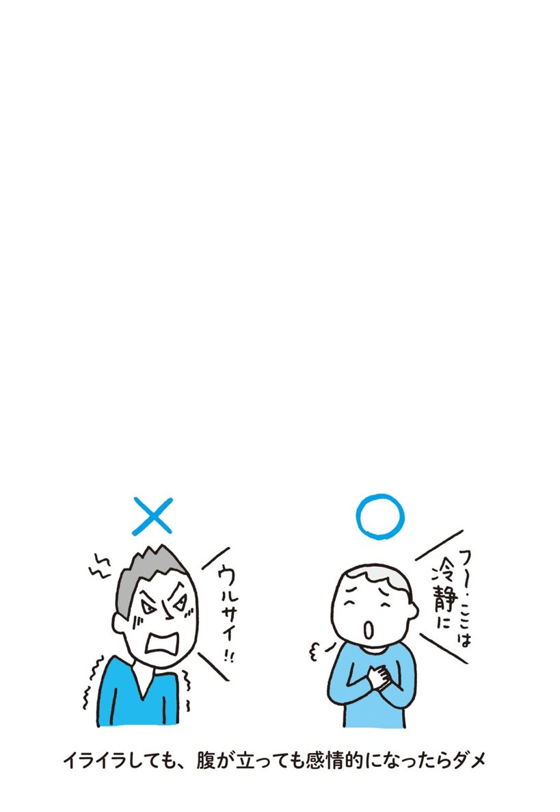
11 嫌われない人は、乱暴な言葉を使わない
ある若い女性の話です。彼女が休みの日の昼下がりに、自宅のアパートで音楽を聴いていると、隣に住む中年の女性が大声でこんなクレームをつけてきました。
「音楽の音がうるさいじゃんか。小さくしろ」
このとき、彼女はこう思ったというのです。
「なによ。自分だって、夜になると、大きな音でテレビをつけているじゃない。友達を呼んでは大声でおしゃべりしているじゃない。それなのに、たまの休日に音楽くらい、かけたっていいじゃない」
そう思うと、腹立たしくなり、つい隣人の女性に反論しました。それが元で口論になってしまったのです。
口論の原因が隣人の女性の乱暴な言葉にあったのは言うまでもありません。
乱暴な言葉にはマイナスのエネルギーが秘められているため、それを耳にした人の心にマイナスの影響を与えてしまいます。
つまり相手を怒らせたり、怖がらせるだけで、大きな溝を作ることになるのです。
嫌われない人は、そのへんのモラルをわきまえていて、会話は音楽でいうところのハーモニーのようなものであると考えています。
「自分が優しい音色を奏でれば、相手も優しい音色を奏でてくれる」
「それによって素敵なハーモニーを醸し出すことができる」
こういう点に意識を向ければ、乱暴な言葉を使うこともなくなり、他人といさかいを起こすこともなくなるでしょう。
ＰＯＩＮＴ 自分が優しい音色を奏でれば、相手も優しい音色を奏でてくれる
12 人に好かれるための７つのルールとは？
コレステロール値が高いので、医者から食生活に注意を払うようにアドバイスを受けた人がいるとします。
その人が心がけなければならないのは、魚卵やレバーといったコレステロールを多く含んだ食品を口にするのをなるべくひかえることです。
しかし、それだけでは不十分です。今度は、豆腐や納豆といったコレステロールの少ない食品を多く食べる必要があります。
会話についても同じです。
この章で述べた「会話のマナー」は、嫌われないようにするための必要最低条件であって、親しみのある好かれる人になるための十分条件ではありません。もっと良好な関係を築くためには、以下の７つのルールを心に刻んでほしいのです。
①初対面の会話で相手とうち解ける
②会話をデザインして相手の心を開かせる
③人に喜びを与える会話を心がける
④自分を出さないで会話をする
⑤他人に尽くす姿勢を言葉で表す
⑥会話を通してギブ＆テイクの関係を築く
⑦自分を磨く
では次章以降では、この７つのルールを生かすための方法について述べていきましょう。
ＰＯＩＮＴ 嫌われないための必要最低条件の次は、もっと良好な関係を築くための十分条件に目を向ける
まとめ
SUMMARY OF CHAPTER①
「嫌われたかも!?」と心配になる人は、日頃の自分の言動が会話のマナーに反していないか振り返ってみよう
嫌われない人は、相手を不快にさせるマイナス言葉、悪口、自慢話などを言わないように気をつけている
嫌われない人は、感情的にモノを言ったり、乱暴な言葉を使ったりしない
01 印象は会った瞬間に決まる
心理学に「初頭効果」という言葉があります。初頭効果とは、第一印象によって、その後の物事の善し悪しを決めてしまう人間特有の心理作用のことを言います。
ファッションがいい例です。たとえば、キチンとしたスーツで身だしなみが整っている人に対して抱く印象は、まじめで常識をわきまえた人というものでしょう。
さらには、「これだけキチンとしているのだから、きっと知性もそなえている立派な人にちがいない」というように、実際には何も知らないのに、その人のイメージを勝手にふくらませてしまうことがあります。
この初頭効果の作用がもっとも強く現れるのは初対面の人と会ったときです。ある説によると、人は会ってから７秒で、相手の第一印象を決めてしまうと言われています。
この初頭効果を有効に活用するための基本は、初対面の人と会ったとき、会話よりも先に笑顔で接することです。笑顔には初対面で緊張した空気を一気に緩和し、その場の雰囲気をなごませてくれる効果があります。
また、相手に安心感を与え、お互いの間にある垣根を低くしてくれます。そうした相乗効果によって、相手は「この人は感じのいい人」という第一印象を抱くようになるのです。
ＰＯＩＮＴ 初対面では会話よりも先に笑顔で接する
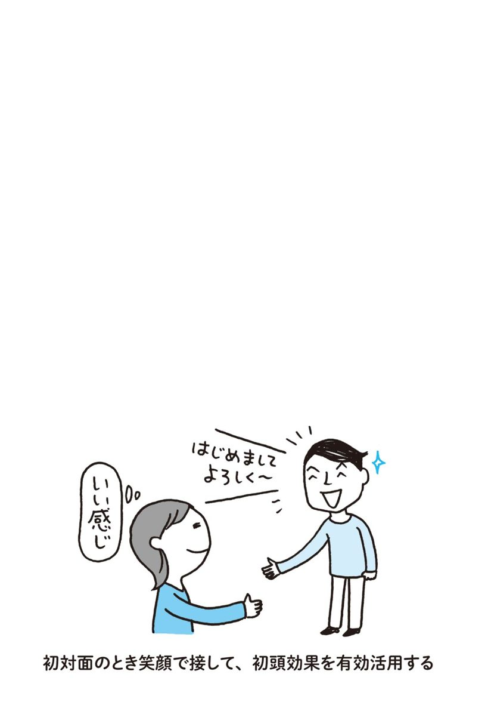
02 「おつきあいを深めたい」という思いを言葉にするのがいい
出版社に勤務する女性編集者の話を紹介しましょう。彼女がベストセラーを何冊も執筆している著名な作家に執筆をお願いしに行ったときのことです。
その作家は、彼女と会うやいなや、こう言ってきたのです。
「お会いできて嬉しいです。光栄です」
さらに、こうも言ってきたのです。
「あなたとタッグを組んで、新たに素晴らしい作品が生み出せるかと思うと、ワクワクしてきます。どうか、よろしくお願いいたします」
この言葉を聞いた瞬間、彼女はものすごく感動し、リラックスした雰囲気のなか、打ち解けて会話ができたと言います。
この「お会いできて嬉しいです。光栄です」という言葉は、目上の人・年下の人を問わず、初対面の人に会ったときに口にすると、大いに効果があります。
その背景には、「あなたと出会えたことに、とても感謝しています。このご縁を大切にし、おつきあいを深めていきたいと思います」という愛と善意に満ちた気持ちが込められているからです。
したがって、初対面の人と会ったときは、ぜひ、この言葉を口にしてみるといいかもしれません。
その際のポイントは、前項でも述べたように、笑顔で丁寧な口調で言うことです。
そうすれば、それが第一印象となって、相手の脳裏に「好感が持てる」という思いが刻み込まれていくようになるでしょう。
ＰＯＩＮＴ 初対面の人には笑顔で、「お会いできて嬉しいです。光栄です」と口にする
03 名前をすぐに覚えて、名前で相手を呼ぶ
音楽雑誌の編集者・星加ルミ子さんは、日本で初めてビートルズの単独インタビューに成功し、雑誌の売り上げ部数を飛躍的に伸ばした人です。
初めてビートルズのジョン・レノンに会ったとき、簡単に自己紹介して数分後、ジョンが「ミス・ルミコ・ホシカは何を飲む？ コーヒーがいい？ 紅茶がいい？」と言ったとき、彼女は大いに感激し、ジョンの人間性に感服したというのです。
ジョンと会ったとき、その場には通訳の人やカメラマンを含め、五人の日本人がいたにもかかわらず、自分の名前を忘れずにフルネームで呼んでくれたことが彼女にとってものすごく嬉しかったのです。こうしたジョン・レノンの姿勢は、人づきあいにおいて、とても参考になると思うのです。
初対面の人と会うと、名刺を交換したにもかかわらず、相手の名前が瞬時に思い出せず、「おたくさま」「あなた」と呼んでしまうことがけっこうあります。フルネームとまではいかないにせよ、「田中さん」「鈴木さん」と名前で呼ばれれば、嬉しくなります。
名前で呼ばれると、自分自身の存在感が高まり、個性が尊重された気分になるからです。
会った瞬間、相手の名前を暗記し、名前で呼べば、初頭効果はさらに絶大になるでしょう。
ＰＯＩＮＴ 人は名前で呼ばれると尊重された気分になる
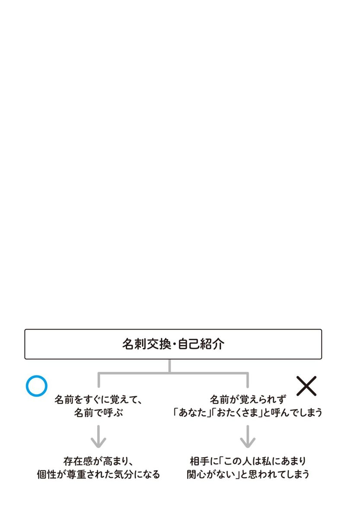
04 「最近の出来事」を会話のネタにすると、相手との距離がグッと縮む
以前、ある心理学者がユニークな実験を行ったことがありました。
二人の女子大生に、駅前の同じ場所で、同じ時間帯に、産地直送のまったく同種のみかんを売ってもらうことにしたのです。
その際、一方の女子大生には買いに来たお客様に「ありがとうございます」とだけ口にするように伝えました。もう一方の女子大生には買いに来たお客様に「今日は寒いですね」「もうすぐクリスマスですね」という言葉も付け加えるように伝えました。
このとき、二人が売ったみかんの数はほぼ同数でしたが、数日後に同じ実験を行ったところ、言葉を付け加えた後者の女子大生のほうが多くのみかんを売ることができました。
それは「今日は寒いですね」「もうすぐクリスマスですね」という言葉が関係していました。この言葉によって、会話を成り立たせることで、数日前にみかんを買いに来たお客様との距離を縮め、親近感を抱かせていたのです。
つまり、リピーターが増えていたのです。
初対面の人との距離を縮めていくためには、相手がひと言返しやすい話題を投げかけましょう。
その際のネタですが、「今年の夏は猛暑日がつづきますね」「もうすぐオリンピックが開催されますね」といったような最近の出来事を口にしてもいいかもしれません。
自分がこう言えば、相手も必ず返事を返すだろうし、その場の雰囲気がなごみます。それが相手との距離を縮める大きなきっかけとなるのです。
ＰＯＩＮＴ 相手がひと言返しやすい話題を投げかける
05 事前に相手の情報を集めておく
初対面の相手との距離を縮める有効な会話のテクニックがもう一つあります。それは、可能な範囲・わかる範囲でかまわないので、事前に相手の情報を収集しておき、それを口にすることです。
実際、初対面で好感を得る人はこの方法に長けていて、「新潟県のご出身だそうですね。新潟のどのあたりですか」「グラフィック・デザインのお仕事をなされているみたいですね」「オーストラリアのほうに、留学されていたそうですね」というようなことを口にします。こう言われると、「この人は私に関心を寄せてくれている」という思いが強くなり、自分自身の存在感が高まり、個性が尊重された気分になり、気持ちがなごむからです。
その結果、相手が心を開くようになるわけです。そのため、わかる範囲で、以下のような情報を収集しておき、「これならしゃべっても当たり障りがないな」ということを口にするといいかもしれません（ただし、無理をしてまで情報を詮索する必要はありません）。
①出身地はどこか
②どういう仕事をしているのか
③どういう経歴の持ち主か
④どういうことに関心を寄せているか
ＰＯＩＮＴ 「私に関心を寄せてくれている」と思わせる
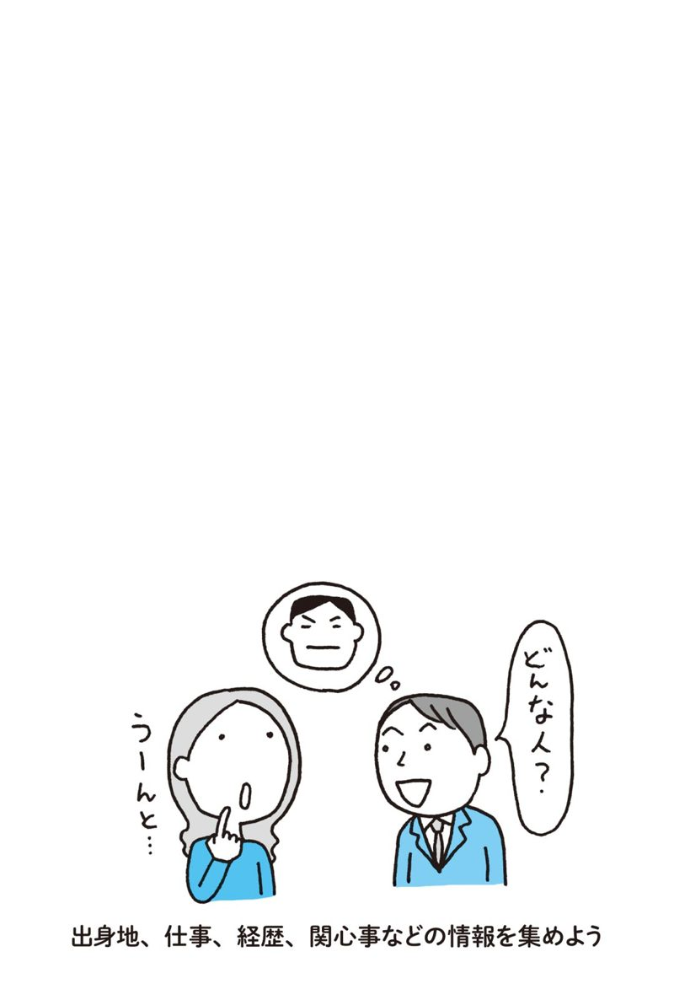
06 自分の情報をさりげなく伝えてみる
初対面の人と会話するときは、たいていの人は緊張してしまうものです。そのため、会話がいまいち弾まなかったり、途切れてしまうことがあります。これは、お互いの「この人はどういう人だろう」という不安感や警戒心によるものです。
この不安感や警戒心を解消するためには、まず、「私は神奈川県の横浜出身で、今は都内で暮らしています」「会社では経理の仕事をしています」「趣味はお菓子づくりとダンスです」「私は寒いのが苦手なので、ここは暖かくて、とても助かります」というように、自分のことからしゃべるといいでしょう。
なぜ、この方法がベターかというと、これは心理学で言うところの「自己開示の返報性」が関係しています。つまり、人は相手から個人的な情報を伝えられると、今度は自分も同程度の個人的な情報を伝えようとする心理作用があるのです。
初対面の人と会ったとき、なかなか会話が弾まないようなら、自分の出身地、仕事、趣味など、無難なところからさりげなく口にしてみましょう。すると、「私もお菓子を作るのが好きなんです」といったように意外な形で話が盛り上がり、意気投合する可能性があります。それは、相手も心を開き始めた証拠なのです。
ＰＯＩＮＴ 自分から心を開けば、相手も心を開く
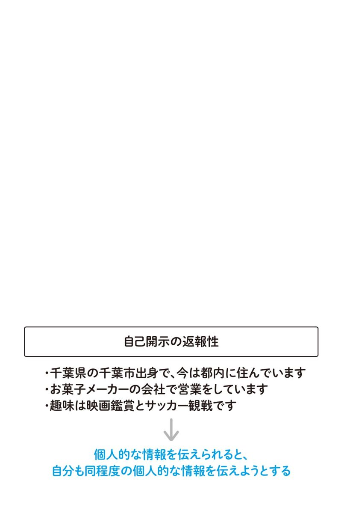
07 相手と自分の共通点を探し出して、会話を盛り上げるには？
初対面の人の心を開くためのもう一つのテクニックとして、相手と自分の共通点を探し出していくのもいいでしょう。これは、そんなに難しいことではありません。
自分の個人的な情報をさりげなく伝え、相手も同程度の個人的な情報を伝えてきたら、その中からリンクできそうなものを見つければいいのです。
たとえば、相手が東京の渋谷によく行く人で、自分もよく渋谷に行くとしたら、次のように会話が進展していく可能性があります。
「いつも渋谷のどの辺に行くのですか」
「私は○○というお店のパスタが大好きで、よく食べに行くんです」
「あそこのパスタはとても美味しいですよね。私はあのお店のサラダも好きなんです」
「えっ、サラダも美味しいんですか。今度、ぜひ食べてみます。他にもお勧めの店ってありますか」
このような会話をする際のポイントは、相手を優位に立たせることです。
先ほどの会話の例文にもあるように、「他にもお勧めの店ってありますか」と教わる姿勢で接していけば、当然、相手は「お勧めの店を教える」という優位な立場に立ちます。それによって、優越感が満たされると同時に、心を開いてくれるようになるのです。
いずれにしても、こうしたやり取りを重ねていけば、緊張感や警戒心がどんどん薄れていき、気づいてみたら、会話が大いに盛り上がるようになるでしょう。
ＰＯＩＮＴ 共通する話題を見つけたら、相手を優位に立たせる
08 相手の関心事を見抜き、共感の姿勢を示す
初対面の人の心を開くためのテクニックとして、相手と自分との共通点を探し出すことについて述べましたが、時には、うまく探し出せないことがあります。
そういうときは、相手の関心事を見抜くようにするといいでしょう。
たとえば、相手がエコロジーに関心があることを知ったら、次のような質問を投げかけてみるのです。
「普段の生活ではどういったことを心がけているのですか」
この質問に対して、相手が「お風呂の残り湯は洗濯に使っています。不要な本は図書館に寄付しています」という返事を返してきたとします。
そうしたら、今度は次のように共感の姿勢を示すのです。
「なるほど、参考になります。私も見習わないと......」
そうすれば、ますます会話が弾むようになるでしょう。
相手の関心事を見抜くのは、そんなに難しくはありません。
たとえば、忘年会の席でサラダを頼んだ人がいたら、「野菜がお好きなのですか」と尋ねてみるのです。
そうすれば、たとえ野菜が好きというわけではなくても、ダイエットや健康に関心を寄せていることがわかるかもしれません。
そうしたら、今度はそのことを話題にして共感を示せばいいのです。
このように相手に興味を持つようにして、それを口にすれば、お互いの距離がグッと近くなり、いい雰囲気が広がるようになるでしょう。
ＰＯＩＮＴ 相手に興味を持ち、それを口にすれば、お互いの距離がグッと近くなる
09 「この人は大切な人」と思うと、それが行動にも表れる
生命保険のセールスで成績が優秀なトップ・レディがいます。
彼女はある主婦の家を訪問し、２時間ほど会話したことがありました。
その間、主婦が一つ不思議に思ったことがありました。
それは彼女の携帯電話が一度も鳴らないことです。
「この人は携帯電話を持っていないのだろうか。それとも忘れてきたのだろうか」
そう思った主婦がそのことを尋ねると、彼女は次のように返答したというのです。
「いいえ。携帯電話は持っています。でも、今の私にとって一番大切な方は、こうして目の前でお話をさせていただいている奥様です。ですから、携帯電話の電源をオフにしているのです」
言うまでもないことですが、相手の携帯電話が鳴ることで、会話が中断されるというのは、あまり気分のいいことではありません。
ましてや、相手が初対面の人だとしたら、会話のテクニックの効果が半減してしまう可能性があります。そのためには、このトップ・レディと同じように携帯電話の電源をオフにするのはもちろんのこと、「目の前にいる人を大切にしよう」と自分に言い聞かせることが大切になってきます。
目の前の相手を優先する。
そうすれば、その気持ちが言動にも表れるようになります。すると、相手もおのずと好感を抱くようになり、「この人は他の人にはない優しさと温かさがある」と思うようになるでしょう。
ＰＯＩＮＴ 会話をするときは、目の前の相手を優先する
10 別れ際の言葉選びでイメージが変わる
知人とレストランに食事に行ったとします。
味も美味しく、値段も比較的リーズナブルなので、それなりに満足しました。しかし、団体客が騒いでいたため、うるさくて知人とゆったり会話ができません。
やがて、レジで会計を済ませようとすると、わざわざ店長が出てきて、こう言ってきたとします。
「本日は団体のお客様の予約が入っていたため、騒がしくて申し訳ございませんでした。お詫びに、次回お越しくださったときのために、ドリンクの無料券をお渡しいたします」
このとき、どんな気持ちになるでしょう。
うるさくて、知人とゆったり会話ができなかったことなどは忘れ、「感じのいいお店」という印象が後々まで残り、「また来よう」と思うはずです。
人との会話も同じで、初対面の人と会ったとき、最後の自分のひと言で、相手に好印象を抱いてもらえることがあります。そのために有効なのが次の言葉です。
「私のために貴重なお時間を割いてくださいまして、ありがとうございました」
「これをご縁に、今後とも、おつきあいさせていただけると嬉しいです」
これらの言葉には良い意味で自分を卑下し、相手を敬うメッセージが込められています。
そのため、相手は自尊心が満たされると同時に、そう言ってくれた人に誠意を感じ、好感を持つようになるのです。
ＰＯＩＮＴ 最後のひと言で自分のイメージアップを図る
11 相手を色メガネで判断しないほうがいい
室町時代の臨済宗の僧である一休にまつわる有名なエピソードがあります。
あるとき、一休はお金持ちの家で営まれる法事に呼ばれ、いつも着ているボロボロの袈裟（僧侶が身につける衣装）を身にまとい、出かけました。すると、受付の人に「ここは乞食坊主が来るようなところではない」と言って追い返されてしまいました。
仕方ないので、今度は貴族と会うときに着る豪華な袈裟に着替え、その家に再度出向くことにしました。そうしたら、「ようこそいらしてくださいました」と言って、法事の後、ご馳走を出されました。このとき、一休は次のように言ったのです。
「このご馳走は私にではなく、私が身にまとっている袈裟に差し上げて下さい」
この話に登場するお金持ちのことを、私たち現代人はバカにはできません。私たちも同様に人を外見・地位・年収・職種・家柄といった色メガネで判断するところがあります。
しかし、親しみの持てる人は違います。
相手が誰であれ、人を色メガネで判断することはありません。ただただ出会いに感謝し、その人との縁を大切にします。
したがって、縁が縁を呼び、多くの人たちの応援・協力によって、ツキに囲まれた人生が送れるようになるのです。
ＰＯＩＮＴ 出会いに感謝し、縁を大切にする
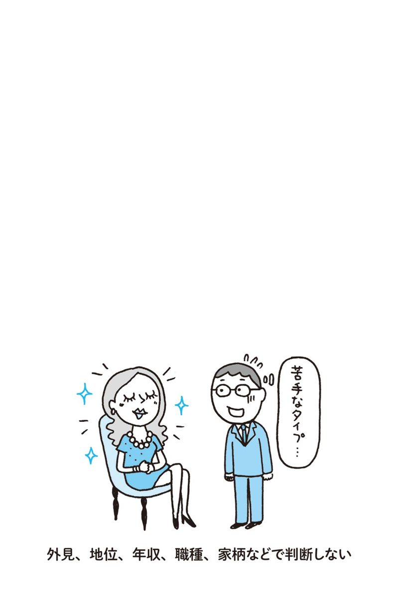
まとめ
SUMMARY OF CHAPTER②
初対面のときには、笑顔で出会えた喜びを言葉にして伝えよう
最近の出来事、事前に調べた相手の情報、自分の情報をネタにして、相手との距離をグッと縮めよう
初対面のときに、会話のなかから相手との共通点、相手の興味あること、関心のあることを探り、話題にしよう
01 相手に安心感と信頼感を与える
見知らぬ場所でお腹がすいて、何かを食べたくなったとします。
「どこのお店で食べようかなあ」
「このお店は美味しそうだけど、高そうだなあ」
そう思っていた矢先、偶然、コンビニが目にとまったとします。
しかも、そのコンビニが、自分がいつも利用しているのと同系列のお店だったとしたらどうでしょう。
そこで、おにぎりやサンドウィッチを買い、すませてしまう人も多いと思います。
なぜでしょうか。それは、そのコンビニのことをよく知っているからです。
言い換えると、「ここのおにぎりやサンドウィッチにはこういう種類のモノがあって、こんな味をしている」という安心感と信頼感によって、コンビニでモノを買おうとするのです。
人づきあいにも同じことが言えます。
初対面で好印象を抱いてもらうことができたとしても、あるいは職場の仲間や学校のクラスメイトのようにつきあいが深まったとしても、それだけでは〝好かれる〟までには至りません。
良好な関係以上の関係、人に好かれるという段階に至るには、相手に安心感と信頼感を抱いてもらう必要があります。
「この人と話していると、何となくホッとする」と思わせることで、心を開いてもらう必要があります。その基本となるのが、〝会話をデザインするテクニック〟です。
ＰＯＩＮＴ 「この人と話していると楽しい。ホッとする」と思わせる
02 人に好かれる人は〝会話のデザイン上手〟
建築家がお客様から「モダンで広い間取りの家に住みたい」ということで、設計デザインの依頼を受けたとします。
そのとき、建築家がお客様の要望を無視して、自分の独断で設計デザインしたらどうなるでしょうか。
お客様は自分の意向を無視された気分になり、「この人に家づくりをお願いするのはやめよう」ということで、話がとん挫してしまう可能性があります。
しかし、実際にはそういうことは絶対にありえません。
建築家はお客様から事細かな要望を聞きだすことから始めるからです。
そのうえで、「ロビーは吹き抜けにしたらどうでしょうか」「キッチンは対面式にしたらどうでしょうか」という提案をしていきます。
そういった打ち合わせを重ねていくことで、お客様は建築家を信頼し、親しみと好感を寄せるようになります。
会話も同じです。相手の意向・考え・価値観といったものを無視して、自分勝手なことを口にすれば、相手はその人のことを敬遠するようになります。
逆に、相手の意向・考え・価値観を尊重しながら、キャッチボールをするかのように会話を重ねていけば、相手はその人にプラスの感情を抱き始め、心を許すようになります。
そして、信頼を寄せ、親しみと好感を寄せるようになります。
これが、まさに〝会話をデザインする〟ということなのです。
ＰＯＩＮＴ 相手の意向・考え・価値観を尊重しながら、会話のキャッチボールをする
03 あいさつにひと工夫するだけで会話のキャッチボールが始まる
会話をデザインしていくための第一歩はあいさつから始まるといっていいでしょう。あいさつは、漢字に表すと「挨拶」となります。
挨拶の「挨」という文字には「心を開く」という意味が、「拶」という文字には「接近する」という意味が込められています。つまり、あいさつというのは、自分から心を開いて相手に接近するというのが、本来の意味なのです。
親しみの持てる人はそのへんを熟知しているようで、あいさつにも工夫をこらしています。たとえば、「こんにちは、Ａさん」だけで終わらすことはありません。
「こんにちは、Ａさん。とても元気そうですね。以前、スポーツジムに通い始めたとうかがいましたが、その効果が現れましたね」という言い方をします。
職場の同僚のＢ子さんにも、「おはよう。Ｂ子さん。あなたがおもしろいと勧めてくれたサスペンスドラマ、私も観たわ。すごくおもしろかったわ」と言います。
要するに、あいさつの際、相手の関心事を話題にして、さりげなく投げかけるテクニックに長けているのです。相手は「この人は自分のことを気にとめてくれている」と感じ、会話もはずむようになります。
ＰＯＩＮＴ あいさつの際、相手の関心事を投げかける
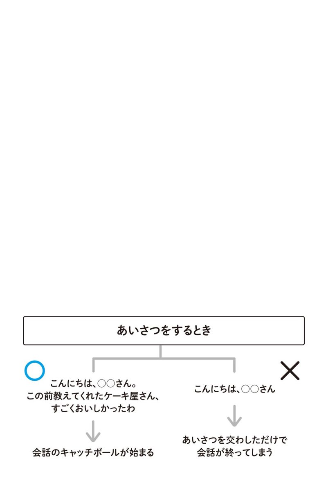
04 相手の心を開かせる質問のテクニックとは？
一般に大相撲の力士は無口で口下手な人が多いと言われています。インタビュアが質問しても、片言の返答しかしてくれません。そんな力士でさえも、雑誌の対談などでたくさんしゃべらせてしまったのが、今は亡きニュースキャスターの久和ひとみさんです。といっても、彼女の場合、特別なテクニックがあるわけではありません。相手の答えた内容に合わせて会話を進めていくだけなのです。たとえば、
「好きな食べ物は何ですか」
「甘いモノが好きです」
「私も甘いモノが大好きです。甘いモノは何が好きですか」
「マロンケーキです」
「マロンケーキは私も大好き。マロンケーキの美味しい店、ご存じですか」
これは、心理学で言う「ミラーリング」が関係しています。ミラーリングとは相手が言ったことを鏡に映したように復唱することです。
相手が言ったことを復唱すると、相手は好意と尊敬の気持ちとして認識し、心を開きやすくなるという利点があるのです。
結論を言えば、会話を楽しくデザインできる人は、質問の仕方がうまいのです。
ＰＯＩＮＴ 相手の話題・関心事に話を合わせ、復唱する
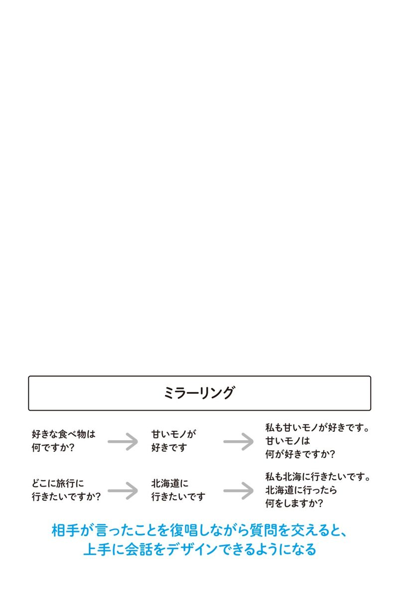
05 質問と詰問の違いを知っておく
会話を楽しくデザインできる人は、質問の仕方がうまいのです。
とはいっても、やみくもに質問をすればいいというわけではなく、注意を払ったほうがいいこともあります。それは質問と詰問は違うということです。
たとえば、会話の相手がゴールデン・ウィークに香港に行ってきたとします。
このとき、「天気はどうでした」「百万ドルの夜景はご覧になりましたか。キレイだったでしょう」と尋ねれば、会話はますます盛り上がります。
これが理想的な質問です。
では、次のような尋ね方をしたらどうでしょう。
「この不景気に、しかもゴールデン・ウィークによく香港に行けましたね。ツアー代金も高かったのではないですか」
少し大げさに表現しましたが、こう言われたら相手は安心して話せるどころか、かえって警戒心を強め、返答をためらうと思います。なかにはイヤミを言われた感じがして、不快な気分になる人だっているかもしれません。
つまり、自分では質問をしているつもりでも、相手からすれば詰問されているように思えてしまうのです。
質問は会話を盛り上げますが、詰問は会話を盛り下げます。
質問は相手を気持ちよくさせますが、詰問は相手を不快にさせます。
そういったことに注意を払うだけでも、相手の自分に対する印象・評価はガラリと変わるようになるのです。
ＰＯＩＮＴ 質問の仕方一つで、相手は気持ちよくもなれば不快にもなる
06 無意味な雑談こそ大切にする
ひと口に会話といってもさまざまです。事務的な会話もあれば、趣味や嗜好などに話が移行して、時には雑談に興じるなんてこともあります。
会話において、この雑談は非常に大切です。
ＯＡ機器のセールスをしている女性がいました。
彼女がある会社に営業に行ったとき、応対に当たってくれた担当者と次のような会話になったことがありました。営業先の担当者が
「だいぶ、寒くなりましたね。寒くなると、ウチの社長、機嫌が悪くなるんですよ。どうも、持病の腰痛が悪化するみたいで......」と言うと、
「私の父も同じでした。でも、ある整体師のところに治療に行ったら、ものすごく良くなったんです」
「エッ、そうなんですか。その整体師、社長に紹介してもらうことはできますか。今、社長を呼んできますので」
結局、これがきっかけで、社長とも直接会うことができ、見事、契約を取ることに成功したのです。雑談は一見すると、無意味のように思えます。しかし、その中にはお互いの心を開きあい、親しくなるための話題がたくさん潜んでいます。もし、彼女が仕事のことしか考えず、担当者の雑談に「大変ですね」と返して終わりだったら、契約には至っていなかったかもしれません。
雑談の中での親しくなるための話題に敏感になれば、相手は「この人ともっとおしゃべりがしたい」と思うようになり、会話のキャッチボールが成り立つのです。
ＰＯＩＮＴ 雑談は親しくなるための話題の宝庫
07 専門用語や難しい言葉を使わないで会話するのがいい
どんな業界・職種にも専門用語はつきものです。
出版業界でも編集者が「初校のゲラがあがったので、大至急、チェックしてください」と言うことがあります。
初校とは、著者や編集者が行う最初の校正のこと、ゲラとはその校正紙のこと、つまり「最初の校正を、大至急、行ってください」という意味です。
しかし、これは出版業界の中で通用する言葉であって、一般の人が聞いたら、いまいち意味がよくわからないと思います。
何が言いたいかというと、一般の人との会話では、業界に身をおく人しかわからない専門用語のような難しい言葉は用いないほうがいいということです。
そういう言葉を口にすると、それだけで相手が拒否反応を示し、不快感に陥ってしまうことがあるからです。
多くの人に好かれるような人は、そういう点にも気配りが行き届いています。
会話では専門用語などの難しい言葉は、小学生や中学生にもわかるような言葉に置き換えます。
「それはどういう意味ですか」と、相手が尋ねるような言葉は使いません。
ですから、相手も戸惑うこともなければ、拒否反応を示すこともありません。
不快感に陥ることもありません。
そういったことに注意を払うことも、会話を楽しくデザインすることにつながっていくのです。
ＰＯＩＮＴ 会話では専門用語などの難しい言葉は、小学生や中学生にもわかるような言葉に置き換える
08 どんなときも知ったかぶりをしない
Ａ子さんという独身の女性が知人のホームパーティーに出席したときのことです。
話題が海外旅行の話になり、参加者の一人、Ｂ子さんが「私は数年前、主人とモルディブの海に潜りに行ったことがあります」と話し始めました。するとＡ子さんは、モルディブに行ったことがないのに、ついついウソをついてしまいました。
「私も恋人とモルディブのリゾートに行ったことがあります。あそこはイスラム圏だから、大好きなお酒が一滴も飲めないのが残念でした」
彼女がこう言うやいなや、Ｂ子さんにこう切り返されてしまったのです。
「あら、おかしいわね。観光客が滞在するリゾートのホテルは、政府が許可していて、どこでもお酒が飲めるはずですけど......」
こうしてＡ子さんは大恥をかいてしまったのです。これはけっして他人事ではありません。
相手の話に合わせようと、ついつい「知ったかぶり」をしてしまう人がいます。しかし、それが度を越すと、この女性のようにウソをつくことになりかねません。問題なのは、ウソを見抜かれてしまったときです。
そうなると恥をかくことはもちろん、相手からの信頼も失います。けっして見栄を張って知ったかぶりをしないようにしましょう。
ＰＯＩＮＴ 知らないこと、わからないことは正直に言う
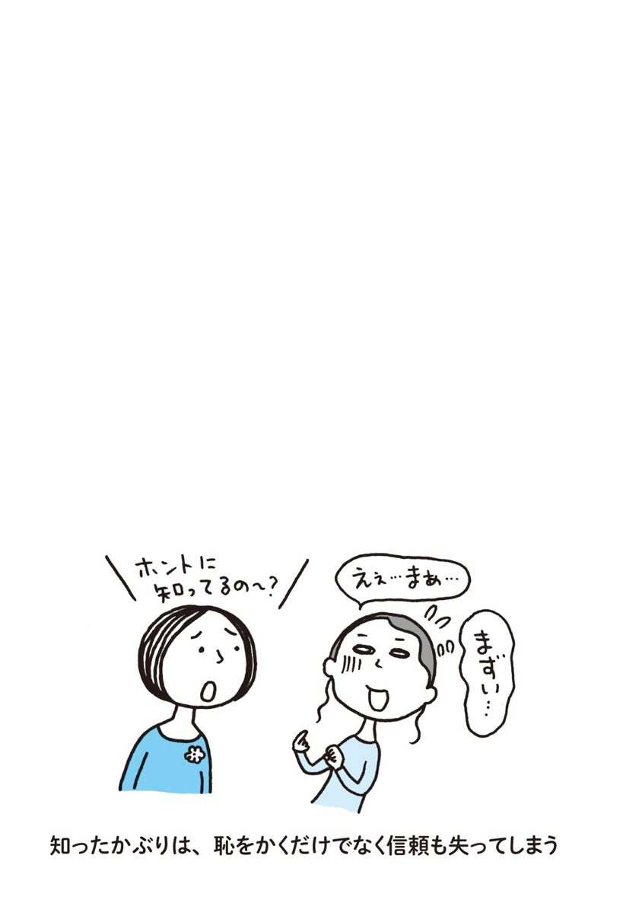
09 自分の口にしたことに責任を持つ
会話をデザインするためには、自分の口にしたことに責任を持つことも大切になってきます。その好例として、ある女性デザイナーの話を紹介しましょう。
そのデザイナーは、ある企業からの仕事をたびたび引き受けていました。
ところが、企業の担当者が代わってから、新しい担当者と一緒に仕事をすることにためらいを感じるようになりました。
なぜでしょうか。
それは、その担当者の意見がコロコロ変わるところに問題がありました。
「今回の会報誌は、温かい赤系統の色でお願いします」と言うので、赤系統の色を中心に使うと、「そんなこと言いましたっけ」と言ってくるのです。
それも、一回や二回ではありません。その担当者と仕事をやると、毎回こんな感じだったので、そのデザイナーは「この人は自分の口にしたことに責任が持てない人だ」と思うようになり、不信感を抱くようになったのです。
人との会話において、自分の意見を言うのは大切なことです。
しかし、言うことがコロコロ変わると、「この人は一貫性がない、大丈夫かな」と相手は不信感を抱くようになります。
そのため、会話が成り立たなくなってしまい、その人のことを敬遠するようになります。
したがって、矛盾した言い方は慎み、自分の口にしたことに責任を持つことも、人に信頼と安心を与えるうえで大切なことなのです。
ＰＯＩＮＴ 言うことをコロコロ変えない
10 口にしたことは絶対に守る
自分の口にしたことに責任を持つことは、人から好感を抱いてもらううえで大切なことですが、それと並んで、もう一つ、肝に銘じたほうがいいのは、口にしたことは絶対に守るということです。
人間は「有言実行タイプ」「有言不実行タイプ」「不言実行タイプ」「不言不実行タイプ」の四つのタイプに分けられますが、なかでも「有言不実行タイプ」の人が一番嫌われやすいからです。
たとえば、「今度、私の知人の医者を紹介します。近々、私のほうから連絡します」という言葉を口にしたときです。
その言葉には、相手への好感と親しみのメッセージが込められています。
そのため、その言葉を聞いた相手も、そのメッセージを受け入れることで、その人に対して感謝と期待を寄せるようになります。
しかし、「今度、知人の医者を紹介します。近々、私のほうから連絡します」と言ったにもかかわらず、それを何ヵ月も守らなかったらどうなるでしょう。
そのメッセージはうわべだけのものになります。
つまり、相手からすれば、感謝と期待をしたのに、それを無視された、裏切られたことになるのです。
したがって、約束する言葉を口にしたら、絶対にそれを守るべきでしょう。
言い換えると、有言実行タイプの人間になってこそ、相手は信頼感を寄せ、その人に好感を寄せるようになるのです。
ＰＯＩＮＴ 有言実行タイプの人間になる
11 相手の言動は多面的に解釈してみる
世界には長年にわたってネス湖のネッシーを研究している人がいます。彼らは新しいネッシーの写真を見ても、「これは未知の生物だ」と決めつけたりはしません。
流木の可能性もある、魚の群れの可能性もある、ねつ造の可能性もある、というように多角的に分析します。
ＵＦＯの研究者も同じです。その人たちは新しいＵＦＯの写真を見たとき、「これは宇宙人の乗り物だ」と決めつけたりはしません。
自然現象の可能性もある、観測気球の可能性もある、ねつ造の可能性もあると、多角的に分析します。
この物事を多角的・多面的に分析するクセは、人と会話をするうえでも大切になってきます。
「今日は相手が不機嫌そうだ。話が弾まない。ひょっとしたら、私のことが嫌いになったのかもしれない」
そう思うと不安が込みあげてきて、余計に話が弾まなくなります。
そういうときは、相手が不機嫌そうな理由を思い込みで判断しないで、多面的に分析してみるといいと思うのです。
「ひょっとしたら、体調がすぐれないせいかもしれない」
「ひょっとしたら、恋人とケンカしたからかもしれない」
このように多面的にその理由を考えるようにすれば、相手に対する不安感は大幅に薄れ、自然体で会話ができるようになるでしょう。
ＰＯＩＮＴ 相手が不機嫌そうな理由を思い込みで判断しない
12 会話は〝食事をしながら〟がいい
「ランチョン・テクニック」という言葉がありますが、簡単に言うと、「食事をしながら会話をすると、心地よい感情が生まれるため、話が弾み、お互いに好意を寄せ合うようになる」という心理学の手法のことを言います。
この芸当に長けていたのが、田中角栄元首相です。田中角栄氏は話が長引きそうになったり、重要な話があるときは必ず、「ウチで食事をしていきませんか」「この話のつづきは、食事をしながらどうですか」と言ったそうです。政財界の中には、そのためだけに〝隠れ家的なレストラン〟を秘書に調べさせる人もいると言います。
この「ランチョン・テクニック」を活用しない手はありません。
重要な話になったとき、「この続きは食事でもしながら」と言い、相手を食事に誘うといいでしょう。
その際、気をつけてほしいのは、相手の嗜好を必ず確認することです。
「苦手な食べ物はありますか」
「日本食、洋食、中華、何が好きですか」
「肉料理が好きですか。魚料理が好きですか」
「お酒は飲みますか」
こうした気配りができればしめたもので、相手はますます好意を抱くに違いありません。
ＰＯＩＮＴ ランチョン・テクニックを活用する
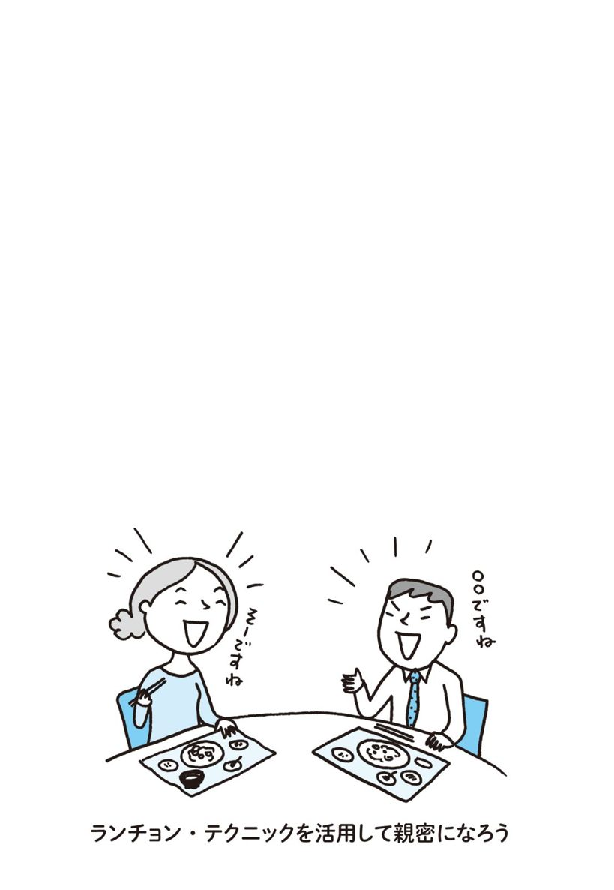
13 「口下手な人ほど人に好かれる」のは、なぜ？
この章では、会話をデザインしていくためのテクニックについて述べてきました。
しかし、なかには次のように思っている人もいるかもしれません。
「私は口下手だし、人と話すのが苦手だから、会話がうまくデザインできないかもしれない」
でも、それは取り越し苦労に過ぎません。というのも、昔、ワシントン・ポストがアメリカ全土で活躍するトップセールスマン１０００人を対象に行った調査によると、「人と会話するのが苦手」と答えた人が７割以上もいたからです。
これはトップセールスマンに限ったことではありません。
ゼロの状態からスタートして大成功をおさめた実業家の多くも、口下手で悩む人が多かったと言われています。
口下手であることと、会話をデザインしていくことは関係ないのです。
むしろ、口下手な人ほど、慎重に、なおかつ的確に言葉を選ぶので、相手に誠実な印象を与えることができるのです。
それに口下手な人は、会話を弾ませる努力をします。また、自分から話すのが苦手な分、聞き耳を立てるのがうまいところもあります。
言い換えると、弁が立つ人よりも、口下手な人のほうが、良好な人間関係が築きやすくなるのです。
そして、良好な人間関係が築きやすくなるということは、それだけ多くの人の応援・協力が得られるため、運まで良くなるという利点があるのです。
ＰＯＩＮＴ 口下手な人のほうが良好な人間関係が築きやすい
まとめ
SUMMARY OF CHAPTER③
相手の意向・考え・価値観を尊重しながら会話のキャッチボールをして、安心感と信頼感を与えよう
相手の関心事、ミラーリングを活用した質問を投げかけて、会話のキャッチボールを活発にしよう
相手からの信頼を損ねないように、知ったかぶりをせず、口にしたことには責任を持つようにしよう
01 太陽の日差しを心がける
イソップ童話の中に、有名な「北風と太陽」の話があります。
あるとき、北風と太陽がどちらが強いかで論じあっていると、マントを着た男が現れ、北風と太陽は男のマントをはがしたほうが勝ちという取り決めをします。
まず、北風が男のマントを吹き飛ばそうと、強い風を吹きつけましたが、男は寒がってマントを身体にきつく巻きつけるだけで、北風はなかなかマントをはがすことができず、とうとうあきらめてしまいました。
次は太陽の番です。太陽はまず春の日差しのように男を照らして、男の身体を徐々に暖めてから、少しずつ日差しを強めていったところ、男は暑くなって、とうとうマントを脱いでしまいました。
この話は一般的には、人に対して厳しく接するよりも、寛容に接したほうが好ましいことを表していると言われていますが、本書のテーマに則して言えば、次のようにも解釈できます。
「太陽が男の身体を暖め、気分を良くしてあげたように、人の心がポカポカと温まるような言葉を会話の中に取り入れていけば、相手は気分が良くなり、好意を寄せるようになる」
この太陽の日差しのようなテクニックが、暖かいエネルギーを放出するのです。
ＰＯＩＮＴ 心がポカポカ温まるような言葉を取り入れる
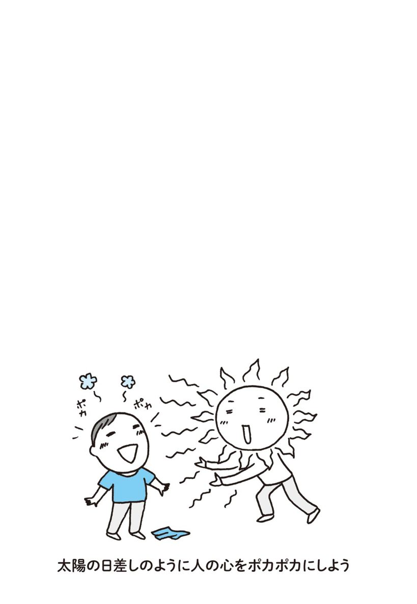
02 人は自分の話を聞いてもらいたがっている
人に喜びを与えるために、まず念頭に入れたほうがいいのは、人は自分の話を聞いてもらいたがるということです。
たとえば、休日、ディズニーランドで新しいアトラクションを体験してきたとします。ミッキーマウスと記念写真を撮ることができた。そして帰りに、近くにあるイタリアンのお店で食事をしたら、パスタがものすごく美味しかった。そういう楽しい体験をした後、たいていの人は友人や職場の仲間にその話をしたくなると思います。
つまり、人は誰にでも自分の話を聞いてもらうことで、自分に関心を持ってもらいたい、自分の体験したことに共感してもらいたいという欲求があるのです。そうすることによって、感動を分かち合い、喜びに浸ること、快適な気分になることを望んでいるのです。
そして、その欲求を満たしてくれた相手には安心感を覚えるようになります。安心感を覚えれば、心を開かずにはいられなくなり、「この人は信用できる」という気持ちになります。それが、聞いてくれた人の好感度アップにつながっていきます。
そのために大切になってくるのは聞く力、すなわち傾聴のスキルを身につけることです。
ＰＯＩＮＴ 傾聴のスキルを身につける
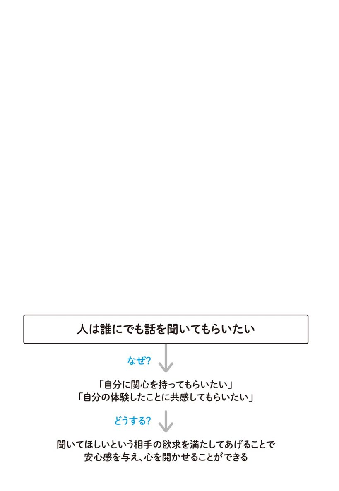
03 聞くときは自分を捨てるのがいい
会話をスムーズに進めるためには、傾聴のスキルを身につけることが大切になってきます。その際、注意を払ったほうがいいのは、相手の話を聞くときは、自分を捨てるということです。
わかりやすくいうと、意識の焦点を自分ではなく相手に向けるようにするのです。
意識の焦点が目の前の相手ではなく、自分にあると、人はどうしても相手が話していることを自分の考えや感情に置き換えてしまうところがあるからです。
たとえば、ディズニーランドに行って新しいアトラクションを体験してきたという話を聞いたとき、人によっては次のように考えてしまうことがあります。
「何時間も並んでアトラクションを体験するのはバカらしい。時間のムダだ」
「私だったら、もっと有意義なことに時間を使うのに......」
このように自分のことに置き換えてしまうと、共感できることや同意できることも限られてしまいます。
しかし、自分を捨てれば、目の前の相手に意識を向けることができるようになります。「この人は私に何を伝えようとしているのか」「何を話したがっているのか」ということに敏感になり、相手の真意を汲み取りやすくなります。
そうすれば、相手が体験したことに共感・同意しやすくなり、「いつか私もそのアトラクション体験してみたいなあ」と、自分の言葉に表れるようになります。
その結果、相手も口にしたことが肯定的に受け入れられたと喜びを感じ、さらなる会話の活性化につながっていくのです。
ＰＯＩＮＴ 意識の焦点を相手に向けるようにすれば、相手の話に共感・同意しやすくなる
04 楽しい未来、楽しい過去を連想させる質問とは？
「ハワイに行かれたそうですね」「スポーツジムに通い始めたそうですね」。こう質問すれば、たいていの人は事実であれば「はい」と答えると思います。しかし、これだと、相手が無口の人の場合、会話がそこで途切れてしまってもおかしくありません。
このように、「はい」「いいえ」の返答しかうながせない質問を「クローズド・クウェスチョン」と言います。
では、次のような質問はどうでしょう。
「ハワイに行かれたそうですね。向こうでは何を食べましたか」「スポーツジムに通い始めたそうですね。いつもどういう運動をしているのですか」。このように尋ねれば、「はい」「いいえ」で終わることなく、会話もどんどん弾んでいくと思います。
これを「オープン・クウェスチョン」と言います。このオープン・クウェスチョンを積極的に活用するといいと思います。
その際のポイントは、楽しい未来を想像させたり、楽しい過去を思い出させる質問を投げかけることです。そうすれば、相手も嬉しい気分になり、どんどん話すようになります。そして、そのきっかけを作ってくれた質問者におのずと好意を寄せるようになるでしょう。
ＰＯＩＮＴ オープン・クウェスチョンを心がける
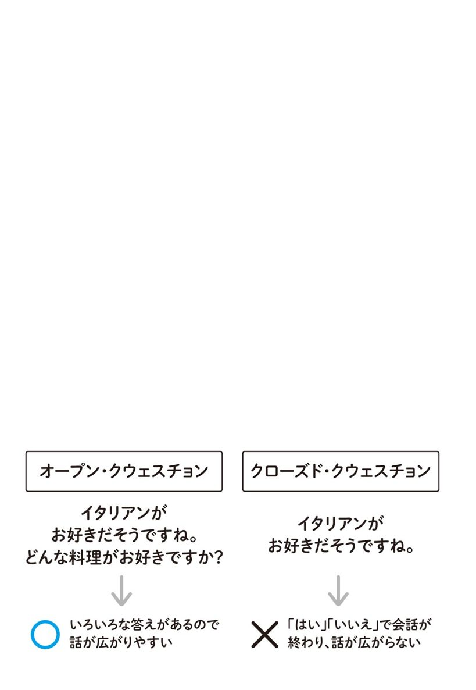
05 注意をするときは喜びを与える
楽しい未来を想像させる質問を投げかけると、相手は質問者に好意を寄せるようになります。実は、このテクニックは他の場面でも活用できます。
目下の人に注意をうながさなければならないときがそうです。
たとえば、部下や後輩が下手な文章で報告書を書いてきたとします。
このとき、感情的になって、「なぜ、こんなひどい文章しか書けないの」と頭ごなしに言ったら相手はどういう反応を示すでしょう。
気分が悪くなるだろうし、反発もしたくなるでしょう。
そうなると、双方の間にシコリが残ってしまう可能性があります。
では、次のような言い方はどうでしょう。
「もし、あなたが文章力をアップさせたらどうなるかな。報告書だけでなく、プレゼンの原稿や企画書の出来も抜群に良くなると思う」
こう言われれば、相手は「文章力をアップさせた未来」に意識を向け、そこに希望や可能性を見出すようになります。
注意する側の言葉も抵抗なく受け入れるようになります。
言い換えると、誰かを叱ったり、注意したりするときは、必要以上に相手を傷つけたり、心をへこませないようにするのです。
むしろ、明るい気分・楽しい気分になるように導いていきます。
心の中に喜びの感情を植え付けてあげるようにすれば、注意する側に対する好感度もグンと上がるようになるでしょう。
ＰＯＩＮＴ 注意するときは、明るい気分・楽しい気分になるように導いていく
06 会った瞬間、ほめるポイントを見つける
以前、テレビのトーク番組で、高級クラブのママが次のようなことを語っていました。
「お客様からたくさんの指名を受ける人気ホステスになるための基本は、お客様と会った瞬間、ほめるポイントが見つけられるようになることです」
そのママが言うには、お客様と会って挨拶を交わす間、お客様のことを細部に至るまで、瞬時に、つぶさに観察するというのです。
「今日はどんな背広を着ているか？」「ネクタイ、時計、靴はどこのブランドか？」、そうやって見つけた「情報」を次のようなほめ言葉に転化させるらしいのです。
「素敵！ その背広。ひょっとしてイタリア製？」
すると、相手は気分が良くなり、心を開くようになります。
そうした雰囲気の中でスムーズな会話を広げていくことができるようになると、人気ホステスの仲間入りを果たすことができるようになるというのです。
会った瞬間、ほめるポイントを見つけ、それを口に出すというのは、大いに参考になると思います。
その際のポイントとして、言葉を入れ替えてみると、なおいいかもしれません。
たとえば、「今日のネクタイ素敵ですね」ではなく、「素敵ですね、今日のネクタイ」と言ってみるのです。
最初に「素敵ですね」と言われると、そちらに意識がいくため、後に続くネクタイという言葉が強調され、ほめ言葉の効果が倍増するからです。
ＰＯＩＮＴ ほめ言葉に工夫をこらし、時には言葉を入れ替えてみる
07 相手が心から喜ぶポイントをほめるには？
音楽雑誌の編集をしている女性が、有名なイギリスのロックバンドのギタリストに取材をしたときのお話です。彼女は当時は駆け出しで、緊張していたこともあり、「ギターがうまいですね」と言い、通訳の人がそのまま伝えたところ、そのギタリストがあまり嬉しそうではなかったことがありました。
彼は「ギターがうまいですね」はいつも言われているので、あまり嬉しくないのです。相手に喜びを与えるためには、「ここをほめてあげると喜ぶ」というポイント見つけることが大切になってきます。
言い換えると、ほめてもらいたい内容は千差万別であることを念頭におき、「この人は何をほめられたら、一番嬉しく感じるだろうか」ということに敏感になるのです。
「この人は地位・役職を誇りに思っている可能性が高い」
「この人は仕事ぶりや仕事の実績を評価されたがっている」
「この人は持ち物を自慢したがっている」
「この人は趣味を認めてもらいたがっている」
これらを感じ取り、実際に口に出せば、相手は間違いなく、喜びに満ちた表情になることうけあいです。
ＰＯＩＮＴ 何をほめたら喜んでくれるかに敏感になる
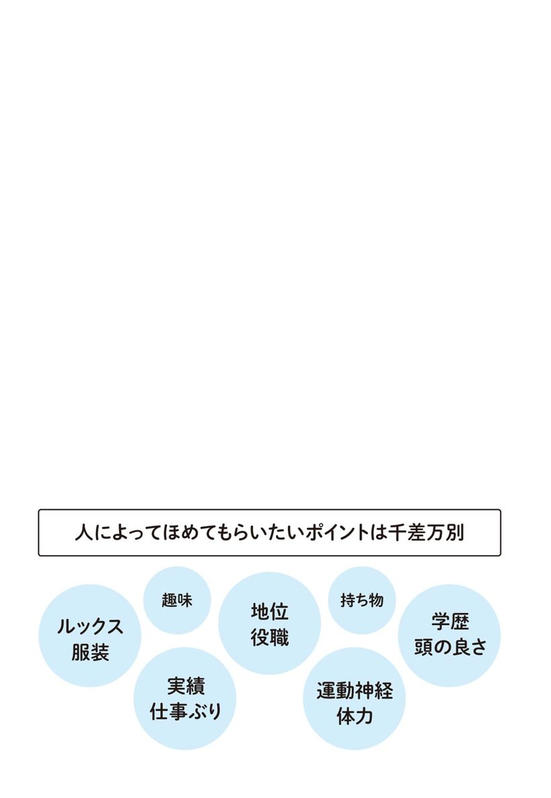
08 本人以外のことをほめる
ある女流作家は多くの女性から愛され慕われています。
それは、温かい人間性もさることながら、人をほめるのが大変うまいことも関係しています。
それも、次のようなほめ言葉を口にするのです。
「あなたの旦那様はハンサムですね」
「息子さんは○○大学に通っているのですか。優秀ですね」
「ご出身は鹿児島ですか。鹿児島のさつま揚げは美味しいですね」
人は自分に関係することを評価されると、それが誇りに思えてきて、気分が良くなる心理があります。
したがって、会話をしていて、相手の関連情報をつかむことができたら、次のような言葉を投げかけてあげるといいでしょう。
「徳島出身ですか。徳島には名湯が多いですね。うどんも美味しいと聞きました」
「○○大学出身ですか。直木賞を受賞した○○さんもあの大学出身ですね」
「息子さんは外国に留学されていたのですか。じゃあ、英語もお上手なんでしょうね」
このように本人以外のこともほめるようにすれば、相手は喜び、ますます上機嫌になります。
「この人と会話していると楽しい」という気持ちでいっぱいになります。
その結果、いっそうの好意と親しみを寄せてくれるようになるでしょう。
ＰＯＩＮＴ 自分に関係することを評価されると、それが誇りに思えてきて、気分が良くなる
09 偉人・有名人を引き合いに出しながらほめる
Ａさんという青年実業家が合コンに参加したときのことです。同席した女性たちは男性に対し、次のようなほめ言葉を連発しました。
「脱サラして、数年で年商三億の会社にするなんて、さすがですね」
「高級スポーツカーに乗っているなんて、すごいですね」
その中に一人だけ次のようなほめ言葉を口にした女性がいました。
「私は日本史に興味があって、いろいろな本を読むのですが、Ａさんは夢が壮大で、イキイキとしているところが、坂本龍馬みたいですね」
男性はこの女性に好意を寄せ、その後、交際へと進展していきました。
このように、偉人と呼ばれる人や有名人をたとえに出して相手をほめるのも、人に喜びを与え、人に好かれるための効果的な方法といってっていいでしょう。
しかし、注意しなければならない点もあります。
それは、生き方・考え方が似ているように思える偉人・有名人にたとえるのはとりたてて問題ありませんが、外見をたとえには出さないほうがいいということです。
「あなたは映画俳優の○○に顔が似ていますね」とほめたつもりでも、相手がその映画俳優のことが好きでないと、かえって気分を悪くしてしまうからです。
そういった点に注意を払い、たとえを使ったほめ方ができるようになれば、会話もどんどん弾むようになり、人間関係も恋もますますうまくいくようになるでしょう。
「忍耐強いところは、徳川家康のようですね。頭が下がります」
「地道に努力をつづけ、成果を出すところは、イチロー選手に似ていますね」
ＰＯＩＮＴ 偉人や有名人にたとえて相手をほめる場合、外見はたとえに出さない
10 相手の趣味・嗜好に敏感になれば、笑顔が届く
江戸初期の臨済宗の僧・沢庵にまつわる話を紹介しましょう。
あるとき、一人の大名が沢庵の寺を訪れました。沢庵は「あの柿の木をごらんください。あと一カ月もすれば、大きな柿の実がなりますよ」と言いました。
このひと言で大名の顔から笑みがこぼれ、会話が弾み、大名は笑顔で帰っていきました。
翌日、今度は別の大名が沢庵の寺を訪れました。沢庵は「ちょうど、私も鴨野長明の方丈記を読み終えたところです」と言いました。
このひと言で大名の顔から笑みがこぼれ、会話が弾み、大名は笑顔で帰っていきました。なぜ、二人とも笑顔で帰っていったのでしょう。
それは最初に訪れた大名は柿が大好物で、翌日訪れた大名は書物、特に方丈記を読むのが大好きだったからです。
誰にでも趣味・嗜好というものがあります。それに理解・関心を示し、共感してあげる言葉を口にするのも、人に喜びを与えるための方法です。
クラシックが好きな人がいたら、「クラシックコンサートは素晴らしいですね」と言ってみるのです。
サッカー観戦が趣味の人には、「ワールドカップが楽しみですね」と言ってみるのです。
こういう言葉が自然体で口から出るようになれば、多くの人から親しまれる人になるのは時間の問題でしょう。
ＰＯＩＮＴ 趣味・嗜好に理解・関心を示し、共感してあげる
11 無理やりでも元気になる言葉を口にする
「プラシーボ効果」という言葉があります。
不眠症で悩む人に、本当はただの小麦粉なのに、睡眠薬と偽って渡すと、よく眠れるようになったという話があります。
つまり、偽薬であるにもかかわらず、症状が好転していくことから、思い込みの力が状態を変化させることをプラシーボ効果というのです。そして、このプラシーボ効果は人と人との会話においても作用することがあります。
たとえば、食欲がない人に次のように言ったらどうなるでしょう。
「そういえば、最近、確かに瘦せたね。どこか具合が悪いんじゃないの。タチの悪い病気かもしれないから、お医者さんに診てもらったら」
すると、相手は本当に不安になり、ますます食欲をなくす可能性があります。
では、次のような言い方はどうでしょう。
「大丈夫。大丈夫。私もそういうことがたまにあるから、気にしないほうがいいよ。それに顔色もいいから、まったく心配ないよ」
こう言われれば、相手の気分は瞬時に晴れ、爽快になります。言葉は魔術です。この力を活用しない手はありません。相手を元気にする言葉を口にしましょう。
「○○さんはいつもハツラツと行動していますね。パワーがみなぎっていますよ」
「ヨガを習うようになって、最近、一段と健康的になったんじゃない」
こういう言葉を会話の中に積極的に取り入れていけば、相手は嬉しい気分になり、「この人ともっとおしゃべりをしたい」と思うようになるに違いありません。
ＰＯＩＮＴ プラシーボ効果の力をプラスに活用する
12 笑いをプロデュースできる人間になる
昭和の大スターといえば石原裕次郎さんを挙げることができると思います。
石原さんはファンはもとより大勢のスタッフからも愛され、慕われていました。
その理由の一つに、他人を笑わせるテクニックに長けていた点が挙げられます。
たとえば、あるとき、彼は寝違えてクビが痛くなり回らなくなったことがありました。そのことをスタッフの一人に尋ねられると、彼はこう返答したというのです。
「借金でクビが回らなくなったからだよ」
本当は借金などしていなかったのですが、このひと言で周囲のみんながどっと笑いだしたと言います。
要するに、石原さんはユーモアを口にするのがうまかったのです。
ユーモアには、相手を喜ばせ、その場の雰囲気を明るくする効果があります。
そして、笑った人は、笑わせてくれた人に対して、親しみを寄せるようになります。したがって、ＴＰＯに応じて、会話の中にユーモアを積極的に取り入れていくといいでしょう。
ただし、あげ足取りやイヤミは好ましくありません。シモネタにも注意を払ったほうがいいでしょう。
また、友達や同僚に通用するユーモアが、年上の人や上司には通用しない場合もあるので、相手によって使い分ける気配りも大切になってきます。
いずれにしても、気のきいたユーモアが口に出せるようになれば、その人のイメージはアップすると思います。
ＰＯＩＮＴ ＴＰＯに応じて、会話の中にユーモアを積極的に取り入れていく
13 マイナスの言葉を口にしたら、プラスの言葉で締めくくる
ある料理を食べた人が「美味しい。でも味が薄い」という言葉を口にしたとします。それを聞いたら、たいていの人は「その料理を絶対に食べたい」とは思わなくなるでしょう。
ある場所に旅行に行った人が「景色はいい。でも人が多すぎる」という言葉を口にしたときも同じです。たいていの人は、そんなに行きたいとは思わないでしょう。
では、「味が薄い。でも美味しい」と言ってきたらどうでしょう。
今度は「じゃあ、自分も食べてみようかな」と思う気持ちのほうが強くなります。
旅行に行った人が「人が多かった。でも景色が良かった」と言ってきた場合も同じで、「じゃあ、私も行ってみようかな」と思う気持ちのほうが強くなります。
何が言いたいかというと、「でも」という言葉を使うと、その前に口にした言葉は心理的に打ち消されてしまう傾向があるということです。
つまり、プラスの言葉を口にしても、「でも」と言った後にマイナスの言葉を口にすると、プラスの言葉よりもマイナスの言葉のほうが余韻として心に響き渡るようになるのです。
そこで、会話をしているとき、マイナスの言葉を口にしなければならないときは、その後にプラスの言葉で締めくくるといいのです。
そうすれば、それがプラスのエネルギーになって相手の心に刻み込まれていきます。すると、相手も不快な感情に陥ることなく、むしろ、楽しい気分でいられるようになるのです。
ＰＯＩＮＴ 「でも」の前に口にした言葉は心理的に打ち消される
14 「ありがとう」を連発するのがいい
日本にはお歳暮やお中元を贈る習慣があります。フルーツが大好きな人がフルーツを頂戴すればものすごく嬉しいでしょう。また、甘いモノがそんなに好きではない人が甘いモノを頂戴しても、そんなに悪い気はしません。
いずれにしても、贈ってくれた相手に好意を感じ、親しみを寄せるようになります。そして、それによって双方の仲はより親密になります。
実は、お歳暮やお中元でなくても、他人に喜びを与える言葉があります。
それは「ありがとう」です。「ありがとう」という言葉には、感謝の意味の他に、「あなたは価値のある人間ですよ」「あなたは私にとって必要な人間ですよ」という隠れたメッセージが込められています。したがって、相手の存在感を高める効果があるのです。
であれば、人と会話する際、「ありがとう」を多く口にするといいと思うのです。
「今日は忙しいなか、会ってくださいまして、ありがとうございます」「楽しい会話ができたわ。どうもありがとう」。そうすれば、相手は喜びを頂戴したことになるため、喜びを贈ってくれた人に対して好意を抱かずにはいられなくなるに違いありません。
ＰＯＩＮＴ 「ありがとう」は相手の存在感を高める
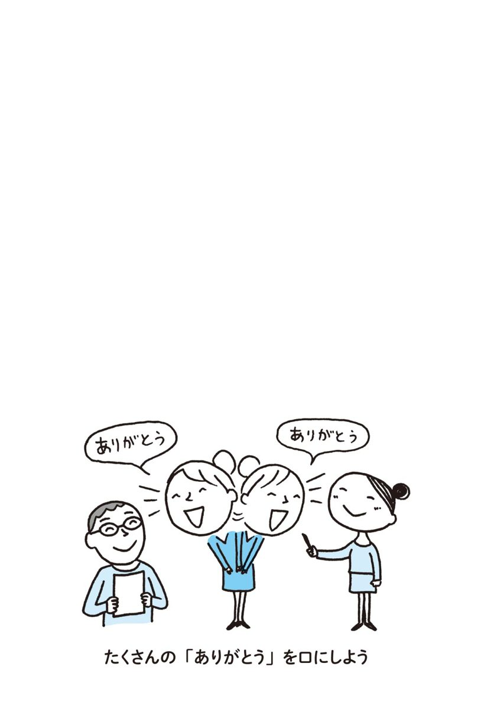
まとめ
SUMMARY OF CHAPTER④
誰でも人に話を聞いてもらいたいと思っている。自分を捨てて相手に意識を向けて話を聞こう
「会った瞬間ほめポイントを見つける」「相手によってほめ言葉を変える」「本人以外をほめる」を押さえておこう
プラシーボ効果が期待できるプラス言葉、「ありがとう」をどんどん口にしよう
01 人は誰でも優位に立ちたがっている
昭和時代の話ですが、相撲の専門雑誌を発行している出版社が、関取を目指す若い力士百人を対象に、次のような質問をしたことがありました。
「部屋で稽古が終わった後、横綱土俵入りの真似をしたことがありますか」
すると、全員が「ある」と答えました。
次に、「横綱になりたいですか」という質問をしたところ、「不可能だと思うけど、なりたい」と答えた人が８割近くにものぼりました。
そして、その理由は次のようなものでした。
「まわりの人から尊敬のまなざしを浴びることができるから」
「大勢の人のまえで格好をつけることができるから」
「人気者になれるから」
こうした欲求は力士のみならず、人間である以上、誰にでもあるといっていいでしょう。
人は誰でも優位に立ちたがっているのです。他人よりも優秀でありたいと願っているのです。周囲の人から尊敬の眼差しを浴びて、人前で格好をつけたいと密かに思っているのです。
この欲求を、人間関係学の大家デール・カーネギーは自己重要感と名づけました。他人に好かれる人は、この欲求を満たしてあげる術に長けているという特徴があるのです。
そのために大切になってくるのは、〝自分を出さないで会話をする〟ことなのです。
ＰＯＩＮＴ 他人に好かれる人は、自己重要感を高める術に長けている
02 「相手の得意技・特技」を引き出してみる
同僚とカラオケに行ったとします。
同僚はサザンオールスターズが大好きで、そのうちのある曲を歌うのが得意だったとします。
そのとき、
「今日は、あなたが歌うサザンのあの曲が聴きたいから、ぜひ歌ってよ」
とリクエストしたら同僚はどう感じるでしょうか。
「私の歌もまんざらではないんだな。じゃあミュージシャンになったつもりで、ちょっと披露してみようか」
などと得意になったり、嬉しく感じるのではないでしょうか。
何が言いたいかというと、自分を出さないで会話をするためには、相手の得意なことに敏感になり、それを引き出してあげるような言葉を口にすることが大切だということです。
そのためには、話がうまい人がいたら、「パーティーの席でスピーチをお願いできませんか」と言ってみるのもいいでしょう。
英語が得意な人と海外旅行に行くときは、「イニシアティブをとってください」と言ってみるのもいいでしょう。
そうすれば、相手の自己重要感はどんどん高まっていき、相手の自尊心は満たされ、優越感に浸ることができます。
そんなきっかけを作ってくれた人に好意を寄せない人はいないのです。
ＰＯＩＮＴ 相手に得意なことをお願いすると、相手の自己重要感はどんどん高まる
03 良い意味で自分を卑下してみる
会話している相手の自己重要感を高めてあげるためには、時には良い意味で自分の劣等感を表わすことも大切になります。たとえば、人と会話していて、「年末、グアムに行ってきました」と相手が言ってきたとします。
このとき、「グアムなら私も行ったことがあります。いいところですよね」というのは普通の会話です。
ところが、好感を持たれる人は違います。「グアムなら私も行ったことがあります」と言った後、こうつづけます。
「私は英語がからきしダメで、一緒に行った友達にあきれられてしまいました」
お互いテニス教室に通っていることがわかったときも同じで、次のような自分を卑下した言い方をします。
「私は運動下手だから、なかなかテニスが上達しないんです。それに比べると○○さんは運動神経が良さそうですね」
通常、人は相手よりも優位に立とうとします。
すごいところを見せようとします。
しかし、人に好感を持たれる人は、自分よりも相手を優位に立たせ、それを言葉に表そうとします。
自分のほうが劣っていることを口にするのに、なんのためらいも感じません。
その違いに気づき、相手を立てるよう心がければ、相手との距離は確実に近くなるでしょう。
ＰＯＩＮＴ 人に好感を持たれる人は自分よりも相手を優位に立たせ、それを言葉に表す
04 目下の相手にも下から目線で接するのがいい
ある会社に売り上げが低迷している部署がありました。叩きあげの営業部長が陣頭指揮をとっているのに営業成績がいっこうに伸びません。やがてその部長が解任され、新しい部長が着任した途端、営業成績はグングンと伸びました。
それは部下に対するモノの言い方が大きく関係していました。
前任の部長は「営業成績を上げるためにはこうするのだ。わかったな」という言い方をしていました。それに対し、後任の部長は「営業成績を上げるためにはこうするといいと思うけど、あなたはどう思う」という言い方をしました。
つまり、前任の部長は「上から目線」で、後任の部長は「下から目線」で部下たちに接していたのです。上の立場にある人は、目下の人に対して、往々にして上から目線でモノを言う傾向があります。しかし、必要以上に上から目線で接すると、押しつけがましくなり、人によっては抵抗を感じるようになります。
逆に、下から目線でモノを言えば、ソフトな感じがして、抵抗を感じることもありません。むしろ、相手の言うことに納得します。
したがって、上下関係を問わず、人と会話をするときは、下から目線を心がけるといいでしょう。
ＰＯＩＮＴ 「わかったな」ではなく「どうだろう」という
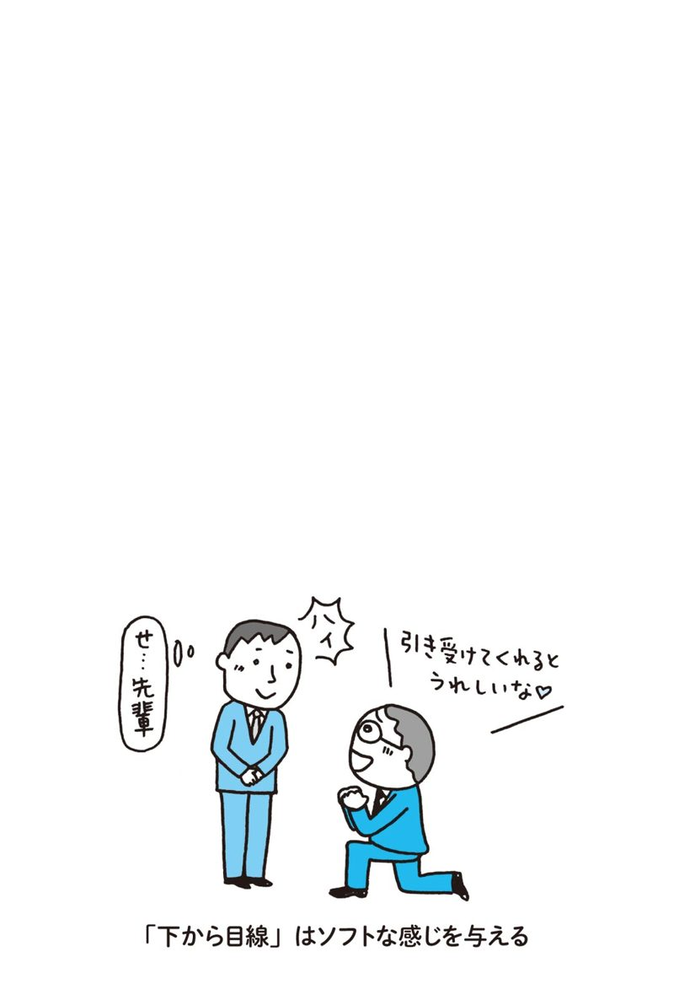
05 相手の話をさえぎってしまうと会話が終わる
美人であるにもかかわらず、恋人ができない女性がいました。合コンに参加しても、なかなかうまくいきません。
その理由は、会話中に相手の話をさえぎることが少なからず関係していました。
たとえば、相手の男性が「このたび、新潟からようやく東京本社に戻ることができました」というと、途中でさえぎり、次のように長々としゃべりだすのです。
「新潟はいいところですね。冬場はスキーが楽しめるし、美味しい食べ物もたくさん食べられるし......。私も何度か旅行に行ったことがありまして......」
しかし、男性の意図は違うところにありました。
「東京に戻ったので、東京スカイツリーの展望台にぜひとも上りたい。ついでに、浅草で美味しいモノを食べたい」という方向に話をもっていきたかったのです。
それにもかかわらず、新潟の話題を持ち出されると、モチベーションが低下してしまいます。会話をつづける気もなくなってしまいます。
こうした過ちを防ぐためには、相手が話しているときは、途中でさえぎることなく、最後まで聞き耳を立てることが大切になってきます。
言い換えると、話題を変えないようにするのです。
相手の言いたいことを的確に把握するように努めるのです。そして、その間は自分の思っていることを口に出さないようにします。自分が話したいことがあれば、その話題の後にすればいいのです。
このルールを守るだけでも、好感を持たれる頻度は大幅に増すでしょう。
ＰＯＩＮＴ 相手が話しているときは最後まで聞き、相手が言いたいことを的確に把握する
06 知っていても、知らないふりをしたほうがいい
あるＯＬが仕事帰りに、上司と先輩の三人で夕飯に行ったときです。
その席で、上司が得意気に次のような話を始めました。
「こういう料理は何キロカロリーあり、こういう料理は何キロカロリーもあるんだ」
すると、女性は「そうなんですか、知りませんでした。勉強になります」とうなずきました。やがて、上司と別れた後、先輩が「キミは確か栄養士の資格を持っていたよね。カロリーに関しては部長よりずっと詳しいはずじゃない」と言うと、彼女は「でも、私がそれを口にしたら、部長の立場はなくなるでしょう」と答えたのです。
この話には、自分を出さないで会話するための秘訣が隠されています。
もし彼女が「私は栄養士の資格を持っているから、それくらい知っています」「正確にはこうです」みたいな言葉を口にしていたら、部長は間違いなく気分を害していたでしょう。
したがって、相手よりも知っていても、知らないふりをするほうがいい場合もあるのです。
相手に恥をかかせたり、コンプレックスを抱かせないようにするのです。とくに相手が目上の人の場合には、なおさらです。
「身につけた知識はひけらかすためのものではない」と肝に銘じておきましょう。
ＰＯＩＮＴ 恥をかかせたり、コンプレックスを抱かせない
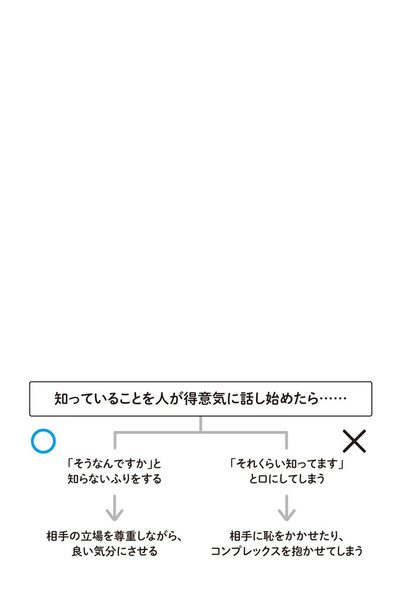
07 相手の過ちは必要以上に指摘しない
「過ぎたるはなお及ばざるがごとし」ということわざがあります。
何事もやり過ぎは良くないという意味です。
その格言の意味を間違えて解釈し、「このことわざは、過去に起きたことはあまり詮索しないほうがいいという意味だ」と言ってきた人がいたとします。
そういうとき、多くの人は「それは違います。正確には、何事もやり過ぎは良くないという意味です」と言って、相手の過ちを指摘すると思います。
もちろん、それはある意味正しいことなのですが、もし、相手が目上の人であったとしたらどうでしょう。
ましてや、大勢の人の前でそう言われたら、その人はどんな気分になるでしょう。自己重要感が損なわれ、自尊心が傷つくことは目に見えています。
その点、多くの人に好かれるような人は、人一倍注意を払っています。
こういうケースの場合、「そうでしたっけ」と、とぼけた返答をします。
ましてや、その場に人が大勢いるときは、「それは違います」という言い方は絶対にしません。「人前で恥をかくことほどつらいものはない」と知っているからです。
したがって、相手の過ちを指摘するときは、状況を読みながら、ＴＰＯに応じて主張したほうがいいでしょう。
とくに、相手の自己重要感にかかわる部分は、なるべく大目に見てあげることが大切になってきます。
それができるようになれば、敵対する人などいなくなるでしょう。
ＰＯＩＮＴ 相手が間違っていても、自己重要感にかかわる部分はなるべく大目に見てあげる
08 自分の体験談は慎重に口にする
ある会社にＡ子さんとＢ子さんという二人のＯＬがいました。
Ａ子さんは夏休みにハワイに、Ｂ子さんは箱根の温泉に行ってきました。
その二人に対して、先輩のＣ子さんが、「夏休みはどうしていたの」と尋ねました。
Ａ子さんは、ハワイに行って楽しかったことを長々と矢継ぎ早に話し始めました。
これに対し、Ｂ子さんは「Ｃ先輩はどうしていましたか」と尋ね、その内容を聞いた後、次のように答えました。
「家の中が散らかっていたので、片付けに追われていました」
以来、Ｃ子さんはＡ子さんにはつらくあたり、Ｂ子さんには優しく接するようになりました。
実は、Ｃ子さんは、夏休みの間、兄夫婦に替わって、病気が進んだ母親の世話に追われていました。
Ａ子さんはそうしたＣ子さんの実状を確認する前に、ハワイに行ったことを口にしました。
それに対し、Ｂ子さんはＣ子さんの実状を確認したうえで、当たり障りのない返答をしたのです。
大変な状態にある人は、他人の楽しい体験が妬ましく思えてしまうことがあります。自分ではそのつもりがなくても、自慢話に聞こえてしまうことがあります。
したがって、自分の体験談は相手の状況に合わせて、慎重に口にしたほうがいいのです。
ＰＯＩＮＴ 大変な状態にある人は、他人の楽しい体験が妬ましく思えてしまうことがあると念頭に置く
09 考え方が違っても、まずは相手の考えを受け入れてみる
この章では、自分を出さないで会話をするテクニックについてお話ししてきました。しかし、時には自分を出さなければならないこともあります。どうしても同意できなかったり、反対意見を述べなければならないときがそうです。
そういうときは、いきなり反論しないで、いったん相手の考えを受け入れてから、自分の意見を述べるようにするといいのです。つまり、まずは相手の意見を肯定し、その後、自分の思っていることを〝やんわり〟とソフトに口にします。
たとえば、友人が「たまには中華料理を食べない？」と言ってきたとします。
しかし、自分は昨夜、脂っぽいモノを食べたので、今日はさっぱりとしたモノが食べたいとします。
そういうとき、「昨夜、脂っぽいモノを食べたから、中華はイヤ」と言ってしまうと、相手との会話が弾まなくなってしまう可能性があります。
では、次のような返答をしたらどうでしょう。
「中華、いいわね。私も大好き。でも、ごめんね。昨夜、脂っぽいモノを食べたから、できたら今日はさっぱりとしたモノが食べたいなあ」
このように返答すれば、相手の意見を肯定し、認めた上で、自分の意見を付け加えた形になるので、相手も不快感を抱くことはありません。むしろ、「さっぱりとしたモノが食べたい」という自分の要求が通りやすくなります。
このように、相手の考えを受け入れてから、自分の意見を述べるようにすれば、お互いに気持ち良く、会話もますます弾むようになるのです。
ＰＯＩＮＴ 反対意見を言うときは、相手の考えを受け入れてから、自分の意見を述べる
10 下から目線でも、言ってはならないことがある
うつ状態の人に言ってはならない言葉があります。
それは「頑張れ」という言葉です。うつ状態の人は、頑張らなければならないことは、本人が一番よくわかっています。
しかし、それができないため、心が葛藤しています。
にもかかわらず、他人から「頑張れ」と言われたら、本人はどうしていいのかわからなくなり、心がますます混乱します。
その結果、ますますうつ状態がひどくなるというわけです。
うつ状態の人に限らず、こうした他人に言ってはならない言葉は他にもあります。
たとえば、なかなかタバコが止められない人がいたとします。
そういう人に向かって、「タバコは百害あって一利なしです。肺がんになるリスクが高くなるし、心筋梗塞になる恐れもありますよ。私と会うときは迷惑なので絶対にタバコを吸わないで下さい」と上から目線で言ったら、どうなるでしょう。
相手はいい気分にはならないでしょう。
タバコが身体に悪いことは、本人が一番よく知っています。
また、相手に迷惑がかかることも十分知っています。
ですから、必要以上に言われたくないと思うようになり、何度も言われると不快感が込みあげてきます。
したがって、説教じみた言葉はよほど親しい間柄の人でない限り、口にしないほうがいいでしょう。
ＰＯＩＮＴ 説教じみた言葉は口にしない
11 会話の主導権は相手に渡すのがいい
Ａさんという人が博学で、ことわざにも精通しているとします。
そんなＡさんにＢさんが「情けは人のためならずとは、どういう意味ですか」と尋ねたとします。
そのとき、Ａさんが「それは、他人に情けをかければ、やがてめぐりめぐって自分に戻ってくるという意味です」と教えてあげたところ、Ｂさんにお礼を言われたら、Ａさんはどんな気分になるでしょう。
ちょっぴり、嬉しい気分になると思います。なぜでしょうか。
人にはモノを教えることで優越感に浸りたいという自己重要感の欲求があり、お礼を言われることによって、それが満たされるからです。
言い換えると、人は他人から頼られることを望んでいるのです。
人から必要とされたいと、強く願っているのです。
したがって、モノを教わったり、相談に乗ってもらう姿勢で、人に接してみてはどうでしょう。
人は教わることによって、二歩も三歩も引き、逆に相手は二歩も三歩も出ることになります。
自分が二歩も三歩も引き、相手が二歩も三歩も出るようになれば、会話の主導権はおのずと相手が握るようになります。
そういったお膳立てができるようになれば、人に好かれる会話の達人と言えるでしょう。
ＰＯＩＮＴ 人は他人から頼られることを密かに望んでいる。人から必要とされたいと、強く願っている
まとめ
SUMMARY OF CHAPTER⑤
得意なことをお願いしたり、下から目線で話したり、時には自分を卑下したりして、相手の自己重要感を高めよう
相手より上に立とうとしたり、相手の過ちを指摘したりして、相手の自己重要感を下げないようにしよう
相手と意見が食い違っても、すぐに否定せず、相手の意見を受け入れてから自分の意見を述べよう
01 「利他の心」に目覚めると世界が変わる
ある洋食レストランはいつも常連客でいっぱいです。
忘年会のシーズンともなれば、予約客が殺到します。
なぜでしょうか。そこにはある秘密が隠されていました。
そのお店のオーナー・シェフはとても親切で、お客様が美味しいといった料理の作り方をていねいに教えてくれるのです。
「お肉を柔らかくするためには、下準備の段階で、こうするといいですよ」
「オムライスを作るときの油の温度はこれくらいが好ましいですよ」
時には、プリントアウトしたレシピ（料理の作り方）までお客様に配ることがあるのです。
人は誰かに親切にしてもらったり、助けてもらったりすると、どこかでそのお返しをしたくなることがあります。この心理作用を、「好意の返報性」と言います。
このレストランは、その法則にのっとっていたのです。
そして、この法則はあの人に好かれたいと思ったときにも活用できます。
そのためには、自我や我欲を捨て、「利他の心」に目覚める必要があります。
「利他の心」とは、他人の幸福を願う姿勢を指します。
要するに、他人に尽くしたり、助けたりすることを第一に考え、それを言葉と態度で表すようにするのです。
それが自然体でできるようになれば、その人は多くの人からますます好かれるようになるでしょう。
ＰＯＩＮＴ 他人に尽くしたり、助けたりすることを第一に考え、それを言葉に表す
02 徳を積む
利他の心に目覚めると、他にもメリットがいくつかあります。
一つは、徳を積むことにつながるため、運がどんどん良くなっていくことです。
これは私の持論ですが、この宇宙には普通の銀行の他に「宇宙銀行」というものが存在します。そして、人のために尽くしたり、助けたりすると、それが徳となって宇宙銀行に積み立てられ、満期になると、預徳の量以上の恩恵がラッキーな現象となって跳ね返ってくる仕組みになっています。
つまり、人のために貢献し奉仕していると、運がよくなり、応援・援助・協力してくれる人がたくさん現れるようになり、その人たちのサポートで願望がかないやすくなるという利点があるのです。
もう一つは、人のために尽くしたり、助けたりすると、他人から感謝されることです。
他人から感謝されれば、自分の自己重要感も自ずと高まり、毎日がイキイキと楽しくなります。考え方も行動も言葉づかいも、すべてが明るくなり、誰に対しても好意的に接することができるようになります。
つまり、自分の心がポジティブになるだけでなく、ますます大勢の人の好感を得られるようになるのです。
ＰＯＩＮＴ 利他の心に満ちた言葉を使うと運が良くなる
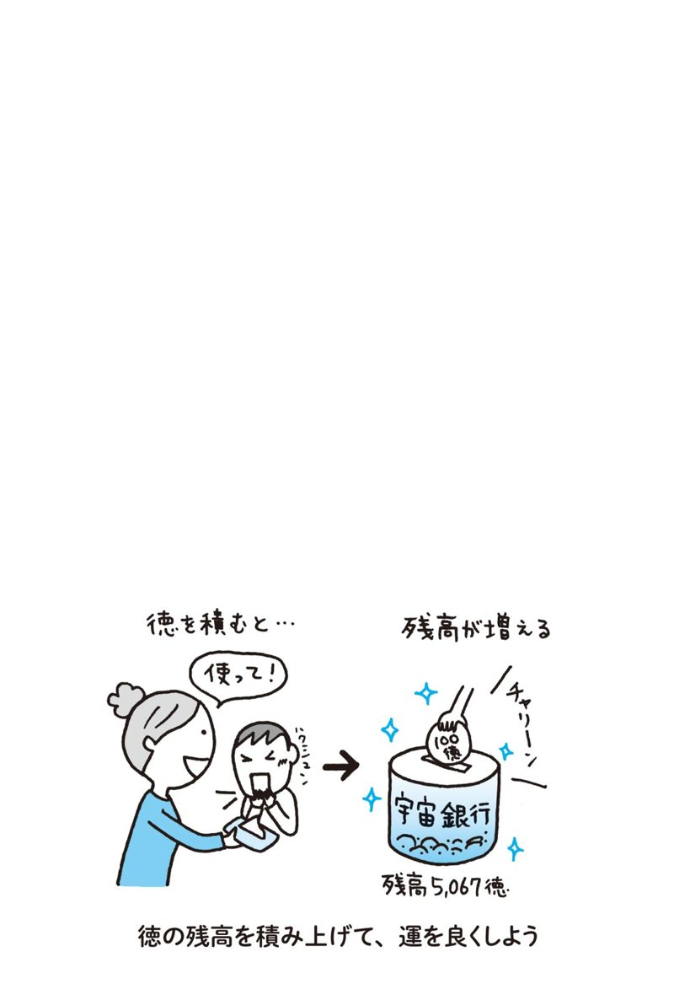
03 頼みごとをされたら、
プラス・アルファの言葉を付け加える
セイコーの創立者・服部金太郎氏にまつわる話を紹介しましょう。
金太郎氏は、若いころ、時計屋で丁稚奉公として働いていたことがありました。
残業しなければならないとき、そこの主人はいつも稲荷寿司を食べていました。そして、あるとき、主人が金太郎氏に稲荷寿司を買ってくるように頼んだところ、金太郎は次のように返答しました。
「ついでに焼酎も買ってきましょうか」
すると、主人は笑みを浮かべながら、金太郎氏にこう言ったのです。
「おまえはなかなか気がきく奴だ」
実は、金太郎氏は主人が残業するとき、稲荷寿司を食べながら、仕事に支障をきたさない範囲で少量の焼酎を飲むのを知っていたのです。
この話を通して言いたいのは、頼みごとをされたら、プラス・アルファの言葉を付け加えることも、利他の心に満ちた会話につながっていくということです。
そのためには「ついでに」という言葉を口にするといいでしょう。
たとえば、上司からコピーを頼まれたとき、それを会議で使用するのがわかっているのなら、「ついでに会議室の机の上に置いておきましょうか」と言ってみるのです。
また、友達から美味しいお店を教えてほしいと頼まれたら、「ついでに割引きクーポンも印刷してあげようか」と言ってあげるのもいいでしょう。
このように、頼みごとをされるたびに「ついでに」という言葉を口にすれば、気がきくと評判になり、人々からの好感度が確実に高まるに違いありません。
ＰＯＩＮＴ 「ついでに」という言葉を有効に使う
04 相手のために使った力は、いつか自分に返ってくる
マイクロソフトの創業者ビル・ゲイツにまつわるエピソードがあります。
あるとき、ゲイツがファーストクラスの飛行機に乗っていたら、キャビンアテンダント（ＣＡ）たちのこんな会話が耳に入ってきました。
「エコノミークラスのお客様、気分が悪そう。大丈夫かしら」
「エコノミークラス症候群かもしれないわ」
そのとき、ゲイツはキャビンアテンダントに次のように言ったのです。
「私が替ってさしあげましょう。私がエコノミークラスに移りますので、そのお客さんを私の席に座らせてあげてください」
こうしたゲイツの計らいで、その乗客は大事に至らずにすんだのですが、この話から大いに見習うべきことがあります。
それは相手の立場でモノを考え、それを言葉で表すことも、利他の心につながっていくということです。そのためには、状況に応じて次のような言葉を口にすることがポイントになります。
「風邪をひいてつらそうね。代わりに私が銀行に行ってこようか」
「引っ越し作業が大変なら、私が手伝いに行こうか」
相手の事情を考え、相手のために力になろう、助けようとする気持ちは、必ず伝わります。そして、それは相手の心の中で、感激と嬉しさに転化するようになります。
そうなれば、相手は助けてくれた人に好感を抱かずにはいられなくなり、今度はその人が困っているときに一肌も二肌も脱ごうという気持ちになるはずです。
ＰＯＩＮＴ 相手を思いやる言葉は、相手の心の中で感激と嬉しさに転化する
05 お布施の精神を言葉に宿す
仏教用語にお布施という言葉があります。お布施というと、葬式や法事などにおいて、お坊さんに渡す謝礼をイメージするかもしれませんが、本当の意味は違います。
他人に施しを与えることで、社会福祉的な活動を行うことを言います。
もう少し具体的にいうと、お布施には「物施」「知施」「法施」の三つがあります。
そして、お金やモノを人に施すことを、「物施」と言います。それよりも人に知恵や知識を授けてあげる「知施」や、仏法を用いて困っている人を救ってあげる「法施」のほうが、より重要だと仏教では説いているのです。そこで、まずは「知施」に注目して、人に知恵や知識を授けてあげるような言葉を口にしてはどうでしょう。
具体的に言うと、次のような言葉を投げかけてあげるのです。
「私、最近ケーキ作りにはまっていて、美味しいケーキの作り方を覚えたから教えてあげましょうか」
「ブログ作りなら、いつでも相談に乗ります」
「カナダに行くなら、○○にある○○という旅行代理店が良心的よ」
その際のポイントは懇切・ていねいにわかりやすく教えてあげることです。
「そんなことも知らないの」とまかり間違っても口にしないようにしましょう。
そうすれば、相手は感謝感激し、このお礼はどこかで返そうと思うようになり、いっそうの好意を寄せるようになります。
つまり、知識を提供してくれた人のことがますます好きにならざるを得なくなるのです。
ＰＯＩＮＴ 人に知恵や知識を授けてあげるような言葉に口にする
06 真剣に聞いてあげるだけでいい
お布施には「物施」「知施」「法施」の三つがあり、まずは「知施」に注目して、人に知恵や知識を授けてあげるような言葉に口にするといいとお伝えしました。
次は「法施」に着目して、困っている人や悩み事を抱えている人がいたら、その人たちの心を楽にしてあげる言葉を口にすることです。本来は仏教の教えを説くことですが、一般人は人々の悩み事に応対するという意味で考えてもいいでしょう。
たとえば、悩み事を抱えている人がいたら、「相談に乗るから打ち明けて」という言葉を口に出してみるのです。
自分ではアドバイスできなくても、真剣に聞いてあげるだけでも、相手の苦しみは半減していくはずです。
真剣に聞いてあげることは「あなたの苦しみはよくわかります。私もあなたと同じ立場になって考えています」という一種の同意・共感を表すことになるからです。
また「こんな本を読んだら、少しは参考になるかもしれない」とためになる本を勧めてあげるのもいいでしょう。
寝たきり老人の介護で苦しんでいる人がいたら、「こんな本があったから、買ってきたの。あなたに差し上げる。参考になると思って」と、プレゼントしてあげることができれば最高です。
知人にケアマネジャーをしている人がいたら、紹介してあげるのもいいでしょう。
最後に、「これからも困ったことや悩み事があったら、いつでも相談に乗るから気軽に声をかけてね」という締めの言葉も忘れてはなりません。
ＰＯＩＮＴ 困っている人や悩み事を抱えている人の心を楽にしてあげる言葉を口にする
07 「どうぞ、お先に......」を口ぐせにする
ある村にみんなからとても慕われている長老がいました。
ある人が「長老のように、大勢の人から慕われ、愛されるためにはどうしたらいいのでしょうか」と尋ねると、その長老は次のように答えました。
「そのためには〝みかん〟のように生きるといいと思います。
毎年、春になると、春ならではの果実の実がたくさんなります。夏になると、夏ならではの果実の実がたくさんなります。秋になると、秋ならではの果実の実がたくさんなります。そして、晩秋を迎えると、ようやくみかんの実がなります。
みかんは『どうぞ、お先に』といって他の果実の実がなった後になるから、大勢の人から好まれるのです」。
つまり、長老はみかんの実がなる時期を引き合いに出すことで、自分本位の気持ちを捨て、相手のことを第一に考える〝譲歩の気持ち〟を大切にすれば、大勢の人から好かれるようになるということを説こうとしたのです。
人に順番を譲れる人は、我欲がありません。心にゆとりがあり、愛と善意に満ちています。
そのオーラが「どうぞ、お先に......」という言葉と一緒に放出されれば、まわりの人はその人のことを尊敬するようになるでしょう。
ＰＯＩＮＴ 譲歩の気持ちを大切にする
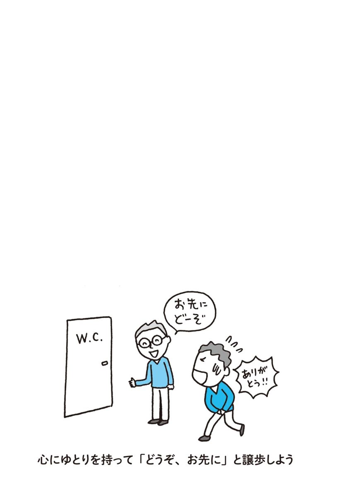
08 幸せのおすそわけをする
ホールインワン保険というものがあります。ホールインワンとは、ゴルフをやる人が最初の一打のみでボールをカップに入れることを言います。その確率は二万分の一とも言われ、とても珍しく、おめでたいことなのですが、その後が大変です。
ホールインワンを出した本人が、パーティーを主催したり、記念品をゴルフ仲間に贈るなどして、多額のお金を散財することになるからです。
そのための金銭的な負担をなくすための保険をホールインワン保険というのです。
しかし、ホールインワンを出してお金を散財するのには、それなりに意味があります。「ホールインワンを出して運を使い果たしてしまうと、後は不運なことが起こりかねないから、みんなにも自分の運を分けることで、不運を回避する」という考え方です。
これは「分福の精神」に近いものがあるといっていいでしょう。
分福とは、よい事が起きたら人にもその福を分けるということです。
そして、この「分福の精神」は、人との会話にも応用できます。
たとえば、「青森の実家からリンゴが送られてきました。お口に合うかどうかわかりませんが、よろしければどうぞ」という言葉がそうです。
要は、一人占めの発想から抜け出して、喜びの共有を図るのです。
自分の幸せは他人の幸せと考え、幸せのおすそわけをするのです。
それが言葉となって現れたとき、「感じのいい人」という印象を持たれ、誰からも好かれるようになるのです。
ＰＯＩＮＴ 一人占めの発想から抜け出して、喜びの共有を図る
09 人が面倒くさがることを行う
アメリカの実業家で自動車王と呼ばれたヘンリー・フォードにまつわる話です。
経営が軌道に乗り、フォードは秘書を雇うことにしました。そこで、三人の女性に３ヵ月間、試用期間として働いてもらい、適任者を秘書に起用しようと考えました。
その結果、ある女性だけが正式に秘書として雇用されました。他の二人の女性のほうが学歴もあり、知識も豊富であるにもかかわらずです。なぜかというと、それは「これは私が......」という言葉が関係していました。
つまり、採用された女性は他人が嫌がる面倒な雑用でも、「これは私が行います」と言って、率先して行っていたのです。その姿勢にフォードは好感を寄せたのです。
実際、人に好かれる人は、面倒くさいことでも自分から率先して動きます。部屋の掃除をいとわないし、忘年会の幹事も積極的に引き受けます。寒い日や猛暑日などに、上司から「おつかいに行ってきてもらえないかな」と言われたら、「私が行ってきます」と即座に返答します。
それでいて、「大変な思いをして私がしたのよ」とは言いません。黙ったままです。
つまり、そういう人は周囲から一目おかれると同時に、宇宙銀行に徳を積むことになり、運気までも上昇するようになるのです。
ＰＯＩＮＴ 「これは私が行います」を口ぐせにする

10 「やりたいからやらせていただく」という気持ちを忘れずに
慢性の腰痛に悩まされている男性がいました。
見るに見かねた知人の女性が腕利きの鍼灸師を紹介してくれました。
そうしたら、腰痛がウソのようにピタリとおさまりました。
早速、その男性が女性にお礼を言うと、彼女は次のように言いました。
「あそこは数カ月先まで予約がいっぱいだから、私がすぐに治療してもらうように、何回も頭を下げて交渉したのよ。少しは感謝してね」
そのとき、その人はどんな気持ちになるでしょう。
ありがたい反面、申し訳ない気持ちでいっぱいになると思います。
では、その人が会うたびに、同じ言葉を口にしてきたらどうでしょう。
うんざりするだろうし、プレッシャーを感じるようになり、その人のことを敬遠するようになると思います。
何が言いたいかというと、尽くしたり、助けてあげたからといって、恩着せがましい言葉を口にして相手に重荷を負わせると、その人は拒否反応を示すようになるということです。
そうならないようにするためには、相手にいっさいの見返りを求めないようにすることが大切になります。
言い換えると「やりたいからやらせていただく」という気持ちで接するのです。
そうすれば、それが言動となって表れ、利他の心に満ちた愛情と善意あふれる言葉だけが口から出るようになり、誰からも愛される存在になるでしょう。
ＰＯＩＮＴ 人に尽くしたり、助けたりしても、いっさいの見返りを求めない
まとめ
SUMMARY OF CHAPTER⑥
「他人に尽くす」「他人を助ける」ことを第一に考えた言動を心がけ、徳を積もう
「物施」「知施」「法施」というお布施の精神を心がけよう
「ついでに」「どうぞ、お先に......」「私がやります」という言葉を口にしよう
01 大地と植物の関係こそが、理想的な人間関係像
ブッダ（お釈迦様）にまつわる話を紹介しましょう。
あるとき、弟子の一人がブッダに「人づきあいを深めていくうえで一番大切なことは何でしょうか」と尋ねると、ブッダは次のように答えました。
「森を思い出してごらん。森には毎年秋になると、たくさんの草木の落ち葉が降り積もる。そして、それらは土の栄養分となる。その栄養分を吸収して豊かな土が作られる。その豊かな土のおかげで草木が育つ。
木と土は、どちらかがどちらかに依存しているわけではない。お互いがお互いを助け合っている。支え合っている。人づきあいもまったく同じだ」。
つまり、ブッダは、お互いが助けあう〝ギブ＆テイクの関係〟を築くことが、人づきあいを深めるうえで大切になるということを言いたかったのです。
ところが、人に避けられてしまうような人を見渡すと、助けてもらうことばかり考える依存心の強い人、あるいは、助けてもらおうとしない自立心の強い人のどちらかが多いような気がしてなりません。
人と良好な関係を築くには、会話を通してギブ＆テイクの関係を築かなければなりません。
ＰＯＩＮＴ お互いが助けあうギブ＆テイクの関係を築く
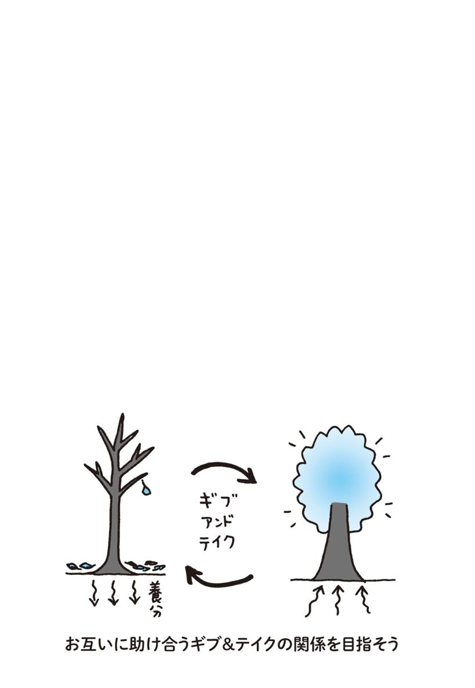
02 強すぎる依存心が身を滅ぼす
まず援助してもらうことばかり考える依存心の強い人から見ていきましょう。
そういう人は心の中でいつも次のようなことを思いつづけていると思います。
「私は同僚の○○さんの援助なしでは、仕事をこなしていけない」
「私は今つきあっている恋人の支えなしでは、生きていけない」
しかし、こういったことをいつも思いつづけていると、一方でこんな不安が生じるようになります。
「同僚から嫌われたくない。もし、そうなったらどうしよう」
「恋人から捨てられたくない。もし、そうなったらどうしよう」
そのため同僚や恋人の顔色ばかりうかがうようになります。嫌われないようにしようと何でも相手の言うとおりにします。そして、それが会話にも表れてきます。
「本当は疲れているから早く家に帰りたい」と思っていても、同僚から「食事に行こう」と誘われると、断りにくくなってしまいます。
本当はハワイに行きたくても、恋人が「台湾に行きたい」と言えば、「そうね」と言って合わせてしまいます。
人に合わせることは大切です。しかし、その状態をずっと続いたらどうなるでしょう。自分の欲求が満たされなくなるため、フラストレーションが増大し、どこかでマイナスの感情が爆発してしまうか、心が完全に折れてしまう可能性があります。
それが会話に表れ、相手から嫌われてしまっては元も子もありません。そうならないためにも、思い当たる人はいち早く極端な依存心は捨てることが大切です。
ＰＯＩＮＴ 依存心が強いと自分の欲求が満たされず、マイナスの感情が爆発するか、心が折れやすくなる
03 強すぎる自立心に心を折られる
次に、援助してもらおうとしない自立心の強い人を見ていきましょう。
そういう人は心の中でいつも次のようなことを思いつづけています。
「私は誰の助けを借りなくても生きていける」
「人を頼るから傷つくのだ。だから、私は誰にも頼らないで生きていく」
そのため、そういう人は他人に甘えたり、頼ることがありません。
仕事などで問題が生じても、周囲の人に助けを求めようとしないで、自分一人で解決しようと考え、すべてを抱え込んでしまいます。
依存心を持たず、自立することは生きていくうえで最も大切なことです。
でも、それが過ぎるとフラストレーションが増大し、マイナスの感情が爆発してしまうか、心が折れてしまう可能性があります。
また、自立心の強い人は、自分の考え方ややり方にこだわり過ぎるあまり、他人の意見に耳を傾けようとしないで、独断で物事を進めてしまう場合もあります。
それが過ぎると、人との会話に言葉となって表れます。
そうなると、「協調性のない人」「自分勝手な人」というレッテルを貼られ、人間関係にも支障をきたすことにもなりかねません。
つまり、人に好かれなくなるどころか、最悪の場合孤立してしまうというデメリットがあるのです。
ＰＯＩＮＴ 自立心の強い人は、「協調性のない人」というレッテルを貼られやすい
04 「相互依存の関係」を築くのは日常の会話から
依存心が強い人、自立心が強い人が、良好な人間関係を築くには、会話を通して「相互依存の関係」を築くことを心がけるといいでしょう。
近年の心理学でもっとも重要視されている「相互依存の関係」とは、一言でいうと、お互いがそれぞれ自立している一方で、必要に応じて依存しあえる関係です。
つまり、お互いが対等に無理のない範囲で、「支え、支えられ」「与え、与えられ」「助け、助けられ」「癒し、癒され」「尊重し、尊重され」......という理想的なギブ＆テイクの関係を築くことです。
実際、よく人に好かれる人は、他人と「相互依存の関係」を築くのがうまいところがあります。
どちらかが困ったときは、どちらかが援助にまわり、どちらかが苦手としているものがあれば、どちらかが助け舟を出します。
また、喜びや感動など、分かち合えるモノを共有しています。それが職場の仲間同士であれば、素晴らしい成果を上げることが可能になるし、夫婦なら円満で笑いの絶えない家庭を築くことができるようになるのです。
そして、それを可能にするためには、日常の会話から変えていく必要があります。
ＰＯＩＮＴ お互いが対等に無理のない範囲で支えあう
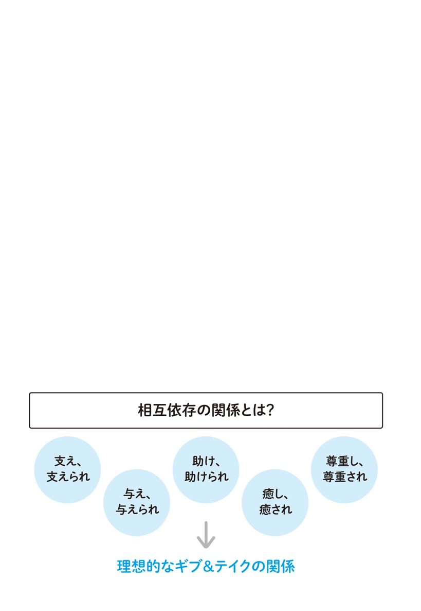
05 依存心の強い人は「してもらう」から脱却する
前述したように、依存心の強い人はいつも次のようなことを思っています。
「私は同僚の○○さんの助けなしでは、仕事がこなしていけない」
「私は今つきあっている恋人の支えなしでは、生きていけない」
これは見方を変えれば、相手から与えてもらうことばかり考えていると言えます。
そうした姿勢から脱却するためには、真逆の「与える姿勢」で相手に接していくことが大切になります。
といっても、そんなに難しいことではありません。
「こうしてあげたら喜んでくれるのではないか」
「こうしてあげたら助かるのではないか」
といったことを言葉で表すようにするのです。
たとえば、次のようにです。同僚に対しては、
「先輩、肩こりがひどいなら軽くマッサージしましょうか」
恋人に対しては、
「残業つづきで、コンビニのお弁当しか食べていないなら、休日くらい、私が手料理を作って持っていってあげる」
また、お布施の精神を肝に銘じて、知識や知恵を提供するような言葉を投げかけてあげるのもいいでしょう。
そうすれば、与えることの喜びが体感できるし、「少しは人の役に立てる」という思いが込みあげてきて、自分に自信が持てるようになります。
ＰＯＩＮＴ 「与える姿勢」で相手に接していく
06 自立心の強い人は、助けを求め、弱みをさらけ出してみる
自立心の強い人はいつも次のようなことを思っています。
「私は誰の助けを借りなくても生きていける」
「人を頼るから傷つくのだ。だから、私は誰にも頼らないで生きていく」
そういう人が周囲と良好な人間関係を築き、他人に好意を持たれる存在になるためには、困ったときは他人に助けを求め、ヘルプ信号を出すことが大切になってきます。わかりやすい例を出しましょう。
たとえば、今日中に明日の会議に提出する企画書をまとめなければならないのに時間がないというとき、後輩に次のようにお願いしてみるのです。
「あなたを見込んでのお願いだけど、誤字脱字のチェックをしてもらえるかしら」
すると、相手は「自分は頼られている」「必要とされている」と思うようになり、自己重要感がアップするようになります。つまり、他人に助けを求めることが、自分に好感を持ってもらうきっかけ作りにつながっていくのです。
また、「私は料理が下手で......」とか「英語が苦手で......」といったように、弱みをさらけ出してしまうのもいいでしょう。
そうすれば、格好をつける必要もなくなります。自分を際立たせる必要もなくなります。自分を大きく見せようとする気持ちが薄れ、自然体で謙虚に相手と会話していけるようになります。
すると、相手も心を開くようになり、同様の態度をとるようになります。
これこそが相互依存の関係を築くためにもっとも大切なことなのです。
ＰＯＩＮＴ 自分を大きく見せなければ、自然体で謙虚に相手と会話していけるようになる
07 お互いの長所を認め合い、お互いの短所をフォローしあう
中央アフリカに古くから伝わる民話を紹介しましょう。
あるところに、ワシに捕まえられ、いじめられている小鳥がいました。
すると、そこへ一頭のライオンがやってきて、ワシを追っ払ってくれました。
小鳥はライオンに「ありがとうございます」と言いました。
数日後、ライオンが川辺で苦虫をつぶしたような表情をしていました。
その理由を小鳥が尋ねると、ライオンは「歯と歯の間についた食べ物の残りカスのせいで気分が悪くてね」と答えました。
すると、小鳥はクチバシでつついて、ライオンの歯と歯の間についた食べ物の残りカスを取ってあげました。
これがきっかけで、小鳥とライオンはとても仲良しになったのです。
この話を通して伝えたいのは、お互いの長所を認め生かし合い、お互いの短所を認め助け合うと、最良の関係が築けるようになるということです。
計算が苦手な人がいたら「手伝ってあげる。その代わり、あなたは文章を書くのが上手だから、今度企画書を添削してね」と言ってみるのもいいでしょう。
相手が恋人ならば、「本棚を取りつけてもらえるかしら。その代わり、あなたのために美味しい料理を作ってあげる」と言ってあげるのもいいでしょう。
人は自分の不備を受け入れてもらえると、代わりに相手の不備をフォローしようと考えるところがあります。
これこそが、相互依存の関係を築くために大切なポイントなのです。
ＰＯＩＮＴ 人は自分の不備を受け入れてもらえると、代わりに相手の不備をフォローしようと考える
08 共通の夢・共通の目標から力が生まれる
京セラの名誉会長・稲盛和夫さんの口ぐせは、「一緒に共通の夢・共通の目標を持ちませんか」だったと言います。ＪＡＬの再建に乗り出したときもそうでした。
最初に社員たちを集め、「会社を一緒に建て直すことを共通の夢・共通の目標にしませんか」と言ったというのです。
共通の夢・共通の目標を持つというのは、お互いの心の周波数を合わせ、「相互依存の関係」を築くうえでも、大切なことです。
たとえば、上司と部下の間に共通の夢・共通の目標がなければ、上司は指示を与えるだけで終わってしまいます。
一方、部下はやらされ感がぬぐえません。
それでは、全体の士気も高まりません。
しかし、共通の夢・共通の目標があれば、お互いに顔を合わせるたびに、夢・目標を熱く語り合えるため、心がポジティブになります。
夢や目標を実現するにはどうしたらいいかを、お互いに知恵を振り絞りながら考えます。
困難に見舞われたときは、お互い支え合い、助け合うことで、それを乗り越えていくことができます。
そうやって夢・目標を実現することができれば、最高の喜びと感動を分かち合うことができ、お互いがお互いの能力・存在を讃え合い、ますます惹かれ合うようになるのです。
ＰＯＩＮＴ お互いがお互いの能力・存在を讃え合うと、お互いがお互いを好きになる
09 「相互依存の関係」を絶えず見つめ直す
この章では、会話を通して相互依存の関係を築いていくための大切さについてお話ししました。
しかし、つきあいが長くなればなるほど、相手のアラが見えてくることもあるだろうし、慣れ合いになることもあります。
そのため、いつのまにか相互依存の関係がないがしろになっていた......なんていうこともありえます。
そこで、月に一度は次のようなことを自問自答してみるといいでしょう。
最近、自分はあの人のことを援助する言葉を投げかけているだろうか。
最近、自分はあの人のことを敬っているだろうか。
最近、自分はあの人に依存ばかりしていないだろうか。
最近、自分はあの人の好意・親切を踏みにじるようなことはしていないだろうか。
最近、自分はあの人と喜びや感動を分かち合えるモノを共有しているだろうか。
そういったことを思い起こせば、反省すべき点が明確になります。
「支え、支えられ」「与え、与えられ」「助け、助けられ」「癒し、癒され」「尊重し、尊重され」......という理想的なギブ＆テイクの関係を築くためには、どういう会話が好ましいかが見えてきます。
このようにして、相互依存の関係を絶えず見つめ直すように心がけていけば、二人の信頼関係はより強固なものへと移行していくようになるでしょう。
ＰＯＩＮＴ 月に一度、自問自答し、反省点を見つけ、改善をする
まとめ
SUMMARY OF CHAPTER⑦
「してもらう」という強すぎる依存心から脱却しよう
謙虚な気持ちを持ち、他人に助けを求め、弱みをさらけ出し、強すぎる自立心から脱却しよう
支え、支えられ・与え、与えられ・助け、助けられ・癒し、癒され・尊重し、尊重される「相互依存の関係」を築こう
01 日常の会話をチェックする
この本のテーマは「嫌われたかも!?と心配にならない話し方のルール」です。それは誰とでも良好な関係を築き、人に好かれる会話のルールです。
しかし、仕事に追われるなどして忙しい日々を送っていると、これまで述べてきたことが実践できなくなってしまうことがあります。
そういうときは、自分を見つめ直してみるといいでしょう。
本書の趣旨に置き換えると、次のように日頃の会話をチェックしてみるのです。
「最近、私は誰かに対して乱暴な言葉を使ったであろうか」
「最近、人と会話していて、相手の話をさえぎったりはしなかったか」
「最近、相手の意見を一方的に否定したりはしなかったか」
などなど。
そういったことを、一日の終わりに振り返るようにすれば、「そういえば、あのとき......」といったように記憶としてよみがえってくるようになります。
もし身に覚えがあれば、同じ過ちを繰り返さないようにするのです。
私たちは往々にして主観的になりがちです。
人との会話も例外ではなく、ついつい主観的にしゃべってしまうところがあります。すると、自分では気がつかないところで、相手を傷つけたり、怒らせてしまうことになります。
それをできる限り未然に防ぐためにも、自分の言動を見つめ直し、いただけない点を改善していくことは、とても大切なことなのです。
ＰＯＩＮＴ 自分の言動を見つめ直し、いただけない点を改善していく
02 「忙しい」という言葉はなるべく口にしないのがいい
ある老舗旅館の女将が、息子の嫁に女将の座を譲るとき、こう話したと言います。
「あなたは若女将として、これまでよく頑張ってくれました。これを機会に私は隠居し、あなたに女将の座を譲ります。それにあたって、ひと言だけ、あなたに忠告しておきたいことがあります」
「これから女将になれば、今まで以上に忙しくなると思いますが、どんなに忙しくても、〝忙しい〟という言葉だけは口にしないように。それを口にしてしまうと、人は去っていきます」
女将のこの言葉は、誰とでも良好な関係を築き、人に好かれる会話を万全なものにしていくうえで、大いに参考になるといっていいでしょう。
私たちは往々にして「忙しい」という言葉を連発しがちです。
しかし、誰でも経験があると思いますが、聞かされる側からすれば、この言葉はけっして気持ちのいいものではありません。
「忙しい」という言葉は、「私はスゴい」という意思表示の表れでもあるため、暇な人からすればおもしろくないし、「私だって忙しい」と思っているのに口に出さない人からすれば、「みんな同じでしょ」と思われる可能性があります。
それに、この言葉をたくさん口にすると、「あの人はいつも大変そうだから......」と、誘われなくなり、次第に人が遠ざかっていくようになります。
本当は、忙しい人ほど時間を作り出すのがうまくて、忙しい人ほど人づきあいを大切にしているのです。そして、そういう人は「忙しい」とは口にしません。
ＰＯＩＮＴ 聞かされる側のとき気持ちのいいものではない言葉に注意を払う
03 「でも」「だけど」という言葉はなるべく口にしないのがいい
人の口ぐせには３つのパターンがあると言われています。
一つは、自分も他人も気づいている口ぐせです。
もう一つは、自分は気づいているけど、他人は気づいていない口ぐせです。
そして最後は、自分は気づいていないけど、他人は気づいている口ぐせです。
なかでも、注意を払わなくてはならないのが、３番目の「自分は気づいていないけど、他人は気づいている口ぐせ」です。
本人に悪気はないのかもしれませんが、聞く側の人によっては心証を害してしまうことがあるからです。
印象がよくない口ぐせの一つが「でも」とか「だけど」という言葉です。
人には誰にでも、自分の体験したことや考えを他人に伝えたがるところがあり、それによって、共感してもらうことを望んでいます。
誰かに自分の体験を伝えたいときに、「でも」とか「だけど」という言葉で切り返されたらどうでしょう。自分の体験したことや考えを否定されたように気持ちになると思います。
人によっては話をつづける気がしなくなります。
黙り込むか、話題を変えざるをえなくなり、お互いの間に距離ができてしまう可能性があるのです。
人間関係をよくしたい相手との会話では、「でも」とか「だけど」という否定的な言葉をなるべく口にしないように心がけるといいでしょう。
ＰＯＩＮＴ 「自分は気づいていないけど、他人は気づいている口ぐせ」に注意を払う
04 人間関係にまつわる名言にふれる
ファーストクラスの乗客を担当するある航空会社のＣＡ（キャビン・アテンダント）の話を紹介しましょう。
そのＣＡは、あるとき、飛行機が着陸して乗客が降りたった後、シートに忘れ物がないかチェックしていたら、一冊の本を見つけました。
よく見ると、その本は人間関係に関する名言集で、ところどころに付箋が貼ってありました。
このとき、そのＣＡはこう思ったそうです。
「なるほど、ファーストクラスに乗られるお客様はこういう成功者の名言集の本を読んで自分を啓発しているんだなあ」
このＣＡが担当したファーストクラスのお客様のように、人に好かれ、良好な人間関係を築くためには、それにまつわる名言にふれるのもいいと思うのです。
そういう名言を目にすれば、人づきあいにおいて忘れかけていたことが思い出せるようになります。
人づきあいにおいて大切なことが再認識できることもあれば、ちょっぴり反省させられることもあります。
時には、目からうろこが落ちるような発見もあるでしょう。
つまり、〝自分磨き〟に一役も二役も買ってくれるようになるのです。
ＰＯＩＮＴ 名言は〝自分磨き〟に役立つ
05 「人間関係は鏡のようなものである」と肝に銘じておく
名言は 〝自分磨き〟に役立ちます。その中でも、ぜひとも参考にしていただきたいのは、成功哲学の第一人者と呼ばれた宗教家ジョセフ・マーフィーの次の言葉です。
「人間関係は鏡のようなものです」
「相手のあなたに対する態度は、あなたの相手に対する態度そのものと考えなさい」
つまり、人間一人ひとりの心は、その奥深いところで、他の人たちの心とつながっているため、相手に抱く感情は、良くも悪くも、ブーメランのように跳ね返ってくる仕組みになっているのです。相手にマイナスの念を送れば、相手もマイナスの念を送り返すことになりますが、逆にプラスの念を送れば、相手もプラスの念を送り返すようになるとマーフィーは言うのです。
マーフィーのこの言葉を人と会話するうえで役立ててみてはどうでしょう。
相手の気分が良くなる言葉、思いやりに満ちた言葉を投げかけるようにするのです。
もちろん、自分がそうしたからといって、すぐに相手の言動が変わるわけではありません。
しかし、自分がいつもそのことを意識して相手と会話するようにすれば、いつか、相手も必ず同じような言動をとるようになります。
自分が変われば相手も変わるのです。
ＰＯＩＮＴ 自分が変われば相手も変わる
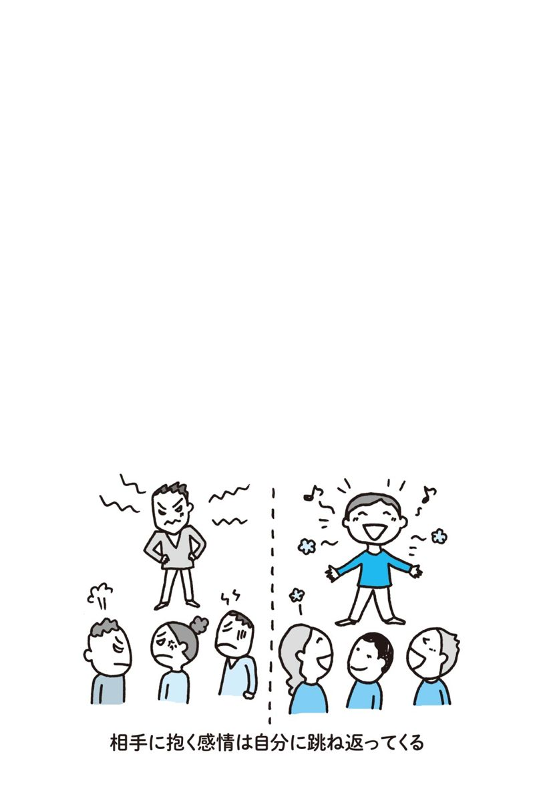
06 人に好かれている人とつきあう
中国に「鄭家の奴は詩をうたう」という格言があります。
鄭家とは、古代中国の儒学者で詩人としても有名な鄭玄の家のことです。そこの使用人（奴）がいつのまにか、鄭玄の詩を覚えてしまい、日常の会話にもその言葉が出てくるようになりました。
そのことから冒頭の格言は、「優れた人のそばにいると、良い知識が身につき、人生にも生かせるようになる」ということを表しています。
現代を生きる人たちにも同じことが言えます。
人に好かれるようになるためには、すでに多くの人に好かれている人のそばにいて、その人から好かれるための秘訣を学び取ることもひとつの方法です。
初対面の人と会ったとき、どういうトーンで、どんな会話をするのか。
会話をデザインしていく過程において、相手とどういうやり取りをするのか。
どのような話題で会話を盛り上げるのか。
利他の心に満ちた言葉はどういうときに口にするのか。
そういったことをつぶさに観察してみるのです。そして、「いいな」と思ったら、そのノウハウを吸収し、今度は自分が意識的に真似てみるのです。
初めのうちは戸惑うこともあるかもしれませんが、それをつづけていけば習慣になります。
そうなれば、いつしか自分もまた人に好かれる人に変身を遂げたことを実感するでしょう。
ＰＯＩＮＴ 好かれている人から秘訣を学び取り、意識的に真似てみる
07 最低限の常識・マナーを身につける
学校で勉強したにもかかわらず、次のようなことを平然と言う人たちがいます。
「アメリカ合衆国の初代大統領はコロンブス」（正解はワシントン）
「源氏物語の作者は源頼朝」（正解は紫式部）
もし、常識ある人と会話しているとき、こんな言葉が飛び出たら、相手はどう思うでしょう。あきれてしまうでしょうし、その場もしらけてしまいます。
つまり、会話が途切れるだけでなく、バカにされる可能性もあるのです。
そうならないためにも、最低限の教養は身につけたほうがいいでしょう。
数種の本を読む他に、新聞や雑誌に目を通し、最近の出来事・世の中の動向を把握するようにするのもひとつの方法です。
手元に中学生のときに使った教科書があれば、それに目を通し、おさらいをするのもいいでしょう。
また、いつ、いかなるときも、マナーを忘れてはなりません。
マナーに欠けていると、会話にもヒビが入るようになります。
人と待ち合わせるときは、遅れない。
人にご馳走になったときは、その場でお礼を言う。
これらは最低限の常識です。
人としての常識があるかどうかに、いつも目を光らせてをいる人がいることを忘れないようにしましょう。
ＰＯＩＮＴ 常識があるかないかに目を光らせている人もいる
08 誰にでも好かれようとしないのがいい
世界中の人から愛され親しまれたロックグループといえば、ビートルズを挙げることができます。ビートルズの曲はロックの他にもスローバラードもあります。名曲が多く、たいていの人は一度くらい聴いたことがあると思います。
しかし、そのビートルズの音楽が「好きになれない」という人が世の中にいるのもまた事実です。
今度は映画の世界に目を向けてみましょう。
寅さんの映画『男はつらいよ』シリーズといえば、多くの日本人に愛され親しまれてきました。やはり、たいていの人は一度くらい観たことがあると思います。
しかし、その寅さんの映画を「おもしろくない」という人が世の中にいるのもまた事実です。
人間関係も同じです。
身近に１００人の人がいたとしたら、どんなに好かれるようと努めても、その人たち全員から、好かれることはありえないのです。
どうしても相性が合わない人がいるのは当然のことなのです。
したがって、「みんなから好かれよう」と考えないことです。
ビートルズや寅さんの映画だって、好きになれない人がいるのだから、自分だって無理にすべての人から好かれてなくてもいいくらいの気持ちでいることです。
自分の心を楽な方向に持っていくためには、そういう開き直りの気持ちも大切になります。
ＰＯＩＮＴ すべての人に好かれることはありえない
09 夢はどこからともなく好意を呼び寄せる
以前、ある保険会社がユニークな調査を行ったことがありました。
千人の男女を対象に、「歴史上の有名人物で親しくなりたい人がいたとしたら、それは誰か？」を尋ねてみたのです。すると、約３分の１近くの人が「坂本龍馬」と答えたというのです。では、なぜ、坂本龍馬なのでしょうか。
それは、彼には夢があったからです。
「日本という国を新しい国に生まれ変わらせたい」
「古い慣習を断ち切り、日本を近代国家へと導きたい」
などなど。
そういう夢に向かってイキイキと邁進したところに、惹かれたらしいのです。これは龍馬に限ったことではありません。
夢・願望があると、人生に大きな張り合いが生まれます。
毎日が楽しくなります。
プラス思考で考え、積極的に行動できるようになります。
未来に対して希望が持てるようになります。
したがって、イキイキとしてきます。
つまり、そういう人は「この人と会話していると、自分もイキイキとしてくる」という理由で多くの人から親しみと好感を持たれるのです。
龍馬にならって、これを機会に夢を持つといいかもしれません。その夢に共感する人が多ければ多いほど、多くの人が親しみと好感を寄せるようになるでしょう。
ＰＯＩＮＴ 夢を掲げると、周囲の人にも元気を分け与え、親しみと好感をもたれるようになる。
まとめ
SUMMARY OF CHAPTER⑧
「忙しい」「でも」「だけど」という言葉を口にしないように心がけよう
「自分も変われば、相手も変わる」という心持ちで、相手の気分が良くなる言葉、思いやりに満ちた言葉を投げかけよう
夢を掲げてイキイキと邁進し、周囲の人にも元気を分け与えよう
【著者略歴】
植西 聰（うえにし・あきら）
東京都出身。著述家。
学習院高等科、同大学卒業後、資生堂に勤務。
独立後、「心理学」「東洋思想」「ニューソート哲学」などに基づいた人生論の研究に従事。
86年、体系化した『成心学』理論を確立し、人々を元気づける著述活動を開始。
95年、「産業カウンセラー」（労働大臣認定資格）を取得。
＜近著＞
『おもてなしのコツ』（自由国民社）
『折れない心をつくる言葉』（青春出版社）
『口ぐせセラピー』（ＫＡＤＯＫＡＷＡ）
『心の整理がうまくなる本』（大和書房）
『すぐ傷ついてしまう自分を強くする方法』（廣済堂出版）
嫌われたかも!?と心配にならない話し方のルール
著者 植西 聰
平成28年5月1日 発行
(C) Akira Uenishi 2014
本電子書籍は下記にもとづいて制作しました
『嫌われたかも!?と心配にならない話し方のルール』
平成26年12月21日初版発行
発行者 小早川 幸一郎
発 行 株式会社クロスメディア・パブリッシング
〒151-0051 東京都渋谷区千駄ヶ谷4-20-3 東栄神宮外苑ビル
http://www.cm-publishing.co.jp
TEL (03)5413-3140
FAX (03)5413-3141
発 売 株式会社インプレス
〒101-0051 東京都千代田区神田神保町一丁目105番地
カバーデザイン 萩原弦一郎 橋本雪（デジカル）
本文イラスト 坂木浩子（ぽるか）